The one-minute answerAng sagot sa loob ng isang minutoAng tubag sulod sa usa ka minutoIng sagot kilub ning metung a minutu
A fasting blood sugar shows where your glucose was at the moment the blood was drawn. A1C (glycated hemoglobin, also written HbA1c) reflects your glucose over roughly the past two to three months. A glucose sensor shows when your sugar rises and falls, including overnight. If you have diabetes, two more tests answer questions about your kidneys: the urine albumin-to-creatinine ratio (UACR) looks for protein leaking into the urine, and the estimated glomerular filtration rate (eGFR) shows how well the kidneys filter. One abnormal number rarely settles anything by itself. Ask which test it was, how it was done, and whether it needs repeating.Ang fasting blood sugar ay nagpapakita kung nasaan ang iyong glucose sa mismong oras na kinunan ang dugo. Ang A1C (glycated hemoglobin, isinusulat ding HbA1c) ay sumasalamin sa iyong glucose sa nakaraang dalawa hanggang tatlong buwan. Ang glucose sensor ay nagpapakita kung kailan tumataas at bumababa ang asukal, pati sa gabi. Kung may diabetes ka, may dalawa pang pagsusuri para sa bato: ang urine albumin-to-creatinine ratio (UACR) ay naghahanap ng protinang tumatagas sa ihi, at ang estimated glomerular filtration rate (eGFR) ay nagpapakita kung gaano kahusay sumala ang bato. Bihirang may napagpapasyahan ang isang abnormal na numero nang mag-isa. Itanong kung anong test iyon, paano ginawa, at kung kailangang ulitin.Ang fasting blood sugar nagpakita kon asa ang imong glucose sa mismong higayon nga gikuhaan ka og dugo. Ang A1C (glycated hemoglobin, gisulat usab nga HbA1c) nagpakita sa imong glucose sulod sa milabay nga duha ngadto sa tulo ka bulan. Ang glucose sensor nagpakita kon kanus-a mosaka ug manaog ang asukal, apil sa gabii. Kon aduna kay diabetes, aduna pay duha ka pagsulay alang sa kidney: ang urine albumin-to-creatinine ratio (UACR) mangita og protina nga motulo sa ihi, ug ang estimated glomerular filtration rate (eGFR) magpakita kon unsa ka maayo mosala ang kidney. Talagsa ra nga ang usa ka abnormal nga numero makahukom og bisan unsa nga siya ra. Pangutan-a kon unsang test kadto, giunsa paghimo, ug kon kinahanglan ba kini balikon.Ing fasting blood sugar ipakit na nu nokarin ya ing glucose mu kanita mismung oras a kinwa la ing daya. Ing A1C (glycated hemoglobin, isusulat mu namang HbA1c) ipakit na ing glucose mu karing milabas a adwa angga atlung bulan. Ing glucose sensor ipakit na nu kapilan mangatas at manaba ing asukal, kaibat na ing bengi. Nung atin kang diabetes, atin pang adwang test para king batu: ing urine albumin-to-creatinine ratio (UACR) manintun yang protina a tutulu king ilu, at ing estimated glomerular filtration rate (eGFR) ipakit na nu ngan kapanintu ing pamanyala na ning batu. Bihira la a metung a abnormal a numeru ing makapagdesisyun nung kaya-kaya mu. Kutang mu nu nanung test ita, makananu degawa, at nung kailangan yang ulitan.
Get emergency care now, whatever the number saysMagpa-emergency agad, anuman ang sinasabi ng numeroPag-emergency dayon, bisan unsa pa ang giingon sa numeroMagpa-emergency ka agad, nanu man ing sabyan na ning numeru
Repeated vomiting, fast or deep breathing, confusion, or being too ill to keep fluids down can mean ketoacidosis, even when the glucose reading is lower than you expect (this can happen with SGLT2 inhibitor medicines such as dapagliflozin or empagliflozin). If someone with possible low sugar cannot swallow safely, has a seizure or passes out, call for emergency help, use prescribed glucagon if someone trained can give it, and give nothing by mouth.Paulit-ulit na pagsusuka, mabilis o malalim na paghinga, pagkalito, o sobrang sakit na hindi makapagpanatili ng inumin ay maaaring ketoacidosis, kahit mas mababa ang glucose kaysa inaasahan (maaaring mangyari ito sa mga gamot na SGLT2 inhibitor tulad ng dapagliflozin o empagliflozin). Kung ang taong maaaring mababa ang asukal ay hindi makalunok nang ligtas, nangingisay o nawalan ng malay, tumawag ng emergency, gamitin ang iniresetang glucagon kung may sinanay na makapagbibigay, at huwag magpainom o magpakain.Balik-balik nga pagsuka, paspas o lawom nga pagginhawa, kalibog, o grabe ka sakit nga dili na makapugong sa ilimnon mahimong ketoacidosis, bisan og mas ubos ang glucose kaysa gidahom (mahimo kini mahitabo sa mga tambal nga SGLT2 inhibitor sama sa dapagliflozin o empagliflozin). Kon ang tawo nga tingali ubos og asukal dili makatulon nga luwas, nangisog o nawad-an og panimuot, tawag dayon og emergency, gamita ang gireseta nga glucagon kon adunay nabansay nga makahatag, ug ayaw siya pakan-a o paimna.Masikan a pamanyuka, mabilis o malalam a pamangisnawa, pamanalikumbo, o makasakit-sakit a ali na mapanatili ing inumin, malyari yang ketoacidosis, uli na man ing glucose mas mababa kesa king inasahan mu (malyaring mapalyari iti karing gamut a SGLT2 inhibitor anti ing dapagliflozin o empagliflozin). Nung ing tau a malyaring mababa ing asukal na e makaluk a malino, mangisay o mawalan yang malay, tawag kang emergency, gamitan ing glucagon a irisetang nung atin sinanay a makapagbye, at e ya pakanan o painuman.
Which question brought you here?Anong tanong ang nagdala sa iyo rito?Unsang pangutana ang nagdala nimo dinhi?Nanung kutang ing mamyakit keka keni?
I'm checking for diabetesSinusuri ko kung may diabetes akoNagsusi ko kon aduna koy diabetesSusuriyan ku nung atin kung diabetes
Lab tests, cut points, and why a result is often repeated.Mga lab test, hangganan ng numero, at bakit madalas inuulit ang resulta.Mga lab test, mga utlanan sa numero, ug ngano nga sagad ginabalik ang resulta.Reng lab test, reng ganggan ning numeru, at nung obat madalas dang ulitan ing resulta.
I already have diabetesMay diabetes na akoAduna na koy diabetesAtin ku nang diabetes
A1C, fingerstick meters and glucose sensor reports.A1C, fingerstick meter at ulat ng glucose sensor.A1C, fingerstick meter ug report sa glucose sensor.A1C, fingerstick meter at report ning glucose sensor.
I have kidney disease or dialysisMay sakit ako sa bato o nagda-dialysisAduna koy sakit sa kidney o nagdialysisAtin kung sakit king batu o magdialysis ku
When A1C can mislead, and the two kidney tests to ask for.Kailan maaaring manlinlang ang A1C, at ang dalawang kidney test na dapat hilingin.Kanus-a mahimong makapahisalaag ang A1C, ug ang duha ka kidney test nga angay pangayoon.Kapilan malyaring manlinlang ing A1C, at ing adwang kidney test a dapat mung arapan.
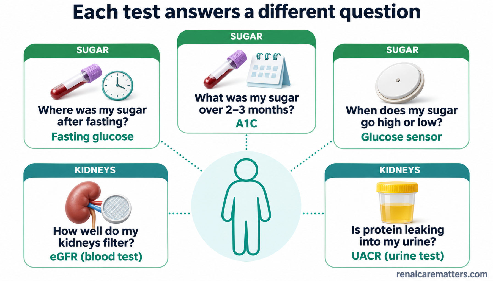
Five common tests, five different questions. Three are about blood sugar, two are about the kidneys.Limang karaniwang test, limang magkaibang tanong. Tatlo ay tungkol sa asukal sa dugo, dalawa ay tungkol sa bato.Lima ka kasagarang test, lima ka lahi nga pangutana. Tulo bahin sa asukal sa dugo, duha bahin sa kidney.Limang karaniwang test, limang aliwang kutang. Atlu tungkul king asukal king daya, adwa tungkul king batu.
- A1C
- Glycated hemoglobin
- eGFR
- Estimated glomerular filtration rate
- UACR
- Urine albumin-to-creatinine ratio
A snapshot, a three-month average, or a moving pictureIsang litrato, tatlong-buwang average, o gumagalaw na larawanUsa ka litrato, tulo ka bulan nga average, o naglihok nga hulagwayMetung a litratu, atlung bulan a average, o gagalaw a larawan
Sugar from food enters the blood as glucose. Insulin, a hormone from the pancreas, moves it into muscle, liver and fat cells, so the level in the blood rises after meals and falls between them. Diabetes means this system no longer keeps glucose in its normal range. Each test catches a different slice of that moving level.Ang asukal mula sa pagkain ay pumapasok sa dugo bilang glucose. Ang insulin, isang hormone mula sa pancreas, ang naglilipat nito sa mga selula ng kalamnan, atay at taba, kaya tumataas ang antas sa dugo pagkatapos kumain at bumababa sa pagitan. Ang diabetes ay nangangahulugang hindi na kayang panatilihin ng sistemang ito ang glucose sa normal na saklaw. Bawat test ay nakakakuha ng ibang bahagi ng gumagalaw na antas na iyon.Ang asukal gikan sa pagkaon mosulod sa dugo isip glucose. Ang insulin, usa ka hormone gikan sa pancreas, maoy mobalhin niini ngadto sa mga selula sa kaunoran, atay ug tambok, mao nga mosaka ang lebel sa dugo human mokaon ug manaog sa tunga-tunga. Ang diabetes nagpasabot nga dili na mapugngan sa maong sistema ang glucose sa normal nga lebel. Ang matag test makakuha og lahi nga bahin sa naglihok nga lebel.Ing asukal manibat king pamangan sumulud king daya bilang glucose. Ing insulin, metung a hormone manibat king pancreas, ing magalis kaniti karing selula ning laman, atay at taba, anyang mangatas ing antas king daya kaibat mangan at manaba kabang e mangan. Ing diabetes buri nang sabyan e na ne kayang panatilian ning sistemang iti ing glucose king normal a sakup. Balang test makakwa yang aliwang bage ning gagalaw a antas a iti.
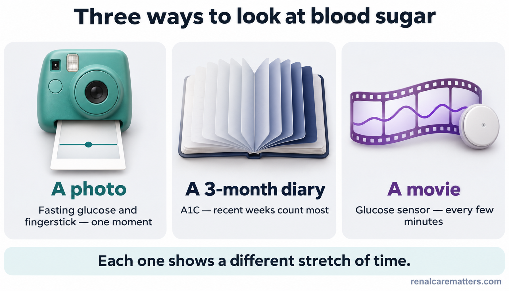
A fasting test or fingerstick is a photo of one moment. A1C is like a three-month diary, with recent weeks counting most. A glucose sensor is a movie of the ups and downs.Ang fasting test o fingerstick ay litrato ng isang sandali. Ang A1C ay parang tatlong-buwang talaarawan, at pinakamabigat ang mga huling linggo. Ang glucose sensor ay pelikula ng pagtaas at pagbaba.Ang fasting test o fingerstick usa ka litrato sa usa ka higayon. Ang A1C sama sa tulo ka bulan nga talaadlawan, ug ang bag-ong mga semana ang labing bug-at. Ang glucose sensor usa ka salida sa pagsaka ug pag-ubos.Ing fasting test o fingerstick litratu ya ning metung a saglit. Ing A1C antimo yang atlung bulan a talaaldo, at pekamabayat la reng kauliang domingu. Ing glucose sensor pelikula ya ning pangatas at pamaba.
- A1C
- Glycated hemoglobin
A fasting glucose test is a single photograph: where glucose was after at least eight hours without food or caloric drinks. A fingerstick meter is also a photograph, taken at whatever moment you choose. A1C works differently. Glucose in the blood slowly and permanently attaches to hemoglobin inside red blood cells. Red cells live about three to four months, so A1C reads like a running record of how much sugar those cells were exposed to, with the most recent weeks counting most. A continuous glucose monitor (CGM), or glucose sensor, is a moving picture. It samples the fluid under the skin every few minutes for 10 to 14 days and shows the highs and lows that a single number hides.Ang fasting glucose test ay isang litrato lamang: kung nasaan ang glucose pagkatapos ng hindi bababa sa walong oras na walang pagkain o inuming may calorie. Ang fingerstick meter ay litrato rin, kinunan sa anumang oras na pipiliin mo. Iba ang A1C. Ang glucose sa dugo ay dahan-dahan at permanenteng kumakapit sa hemoglobin sa loob ng mga pulang selula ng dugo. Nabubuhay ang pulang selula nang mga tatlo hanggang apat na buwan, kaya ang A1C ay parang talaan ng dami ng asukal na tumama sa mga selulang iyon, at pinakamabigat ang mga huling linggo. Ang continuous glucose monitor (CGM), o glucose sensor, ay gumagalaw na larawan. Sinusukat nito ang likido sa ilalim ng balat bawat ilang minuto sa loob ng 10 hanggang 14 na araw at ipinapakita ang taas at baba na itinatago ng iisang numero.Ang fasting glucose test usa lang ka litrato: kon asa ang glucose human sa labing menos walo ka oras nga walay pagkaon o ilimnon nga adunay calorie. Ang fingerstick meter litrato usab, gikuha sa bisan unsang higayon nga imong pilion. Lahi ang A1C. Ang glucose sa dugo hinay-hinay ug permanente nga mokapyot sa hemoglobin sulod sa mga pulang selula sa dugo. Ang pulang selula mabuhi og mga tulo ngadto sa upat ka bulan, mao nga ang A1C sama sa talaan kon unsa kadaghan ang asukal nga naigo niadtong mga selula, ug ang pinakabag-o nga mga semana ang labing bug-at. Ang continuous glucose monitor (CGM), o glucose sensor, usa ka naglihok nga hulagway. Gisukod niini ang likido ilalom sa panit matag pipila ka minuto sulod sa 10 ngadto sa 14 ka adlaw ug gipakita ang taas ug ubos nga gitago sa usa lang ka numero.Ing fasting glucose test metung yamu a litratu: nu nokarin ya ing glucose kaibat ning e kukulang walung oras a alang pamangan o inumin a atin calorie. Ing fingerstick meter litratu ya mu rin, kinwa king nanu mang oras a pilinan mu. Aliwa ing A1C. Ing glucose king daya dahan-dahan at permanenteng kumapit king hemoglobin king lub dareng mayang selula ning daya. Mabye la reng mayang selula atlu angga apat a bulan, anya ing A1C antimong talaan nung ngan karakal a asukal ing tinaman karing selulang ita, at pekamabayat la reng kauliang domingu. Ing continuous glucose monitor (CGM), o glucose sensor, gagalaw yang larawan. Sukatan na ing danum king lalam ning balat balang pilan a minutu kilub ning 10 angga 14 a aldo at ipakit na ing atas at baba a itatagu ning metung yamung numeru.
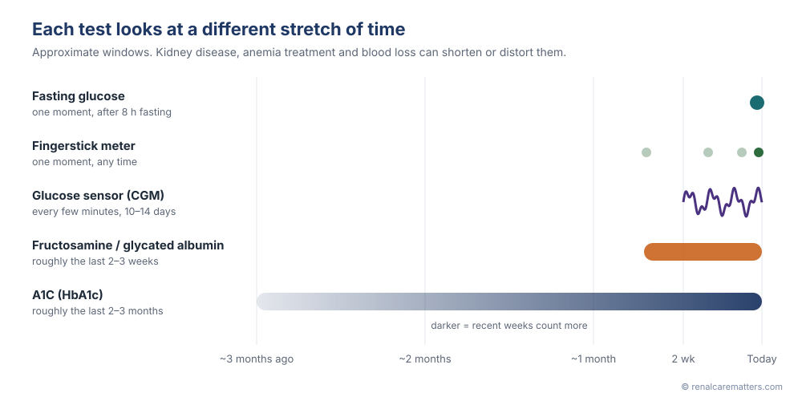
Fasting glucose and fingersticks are single moments. A sensor records every few minutes for 10 to 14 days. Fructosamine and glycated albumin reflect about two to three weeks, and A1C about two to three months, with recent weeks counting most.Isang sandali lamang ang fasting glucose at fingerstick. Ang sensor ay nagtatala bawat ilang minuto sa loob ng 10 hanggang 14 na araw. Ang fructosamine at glycated albumin ay sumasalamin sa mga dalawa hanggang tatlong linggo, at ang A1C sa mga dalawa hanggang tatlong buwan, na pinakamabigat ang mga huling linggo.Usa lang ka higayon ang fasting glucose ug fingerstick. Ang sensor magrekord matag pipila ka minuto sulod sa 10 ngadto sa 14 ka adlaw. Ang fructosamine ug glycated albumin nagpakita sa mga duha ngadto sa tulo ka semana, ug ang A1C sa mga duha ngadto sa tulo ka bulan, nga ang bag-ong mga semana ang labing bug-at.Metung yamung saglit ing fasting glucose at fingerstick. Ing sensor magtala balang pilan a minutu kilub ning 10 angga 14 a aldo. Ing fructosamine at glycated albumin ipakit da ing adwa angga atlung domingu, at ing A1C ing adwa angga atlung bulan, at pekamabayat la reng kauliang domingu.
- A1C
- Glycated hemoglobin (HbA1c)
- CGM
- Continuous glucose monitor
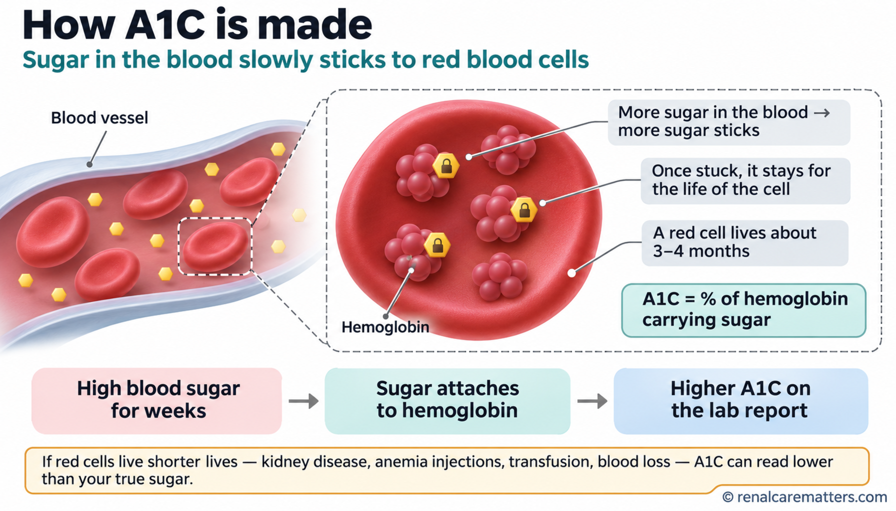
A1C measures how much of your hemoglobin has sugar stuck to it. More sugar for longer means a higher A1C. Red cells that live shorter lives have less time to collect sugar, so A1C can read lower.Sinusukat ng A1C kung gaano karami sa iyong hemoglobin ang may nakakapit na asukal. Mas maraming asukal nang mas matagal, mas mataas ang A1C. Ang pulang selulang mas maikli ang buhay ay may mas kaunting panahon para mangolekta ng asukal, kaya maaaring mas mababa ang A1C.Gisukod sa A1C kon pila sa imong hemoglobin ang adunay nakapyot nga asukal. Mas daghang asukal sa mas dugay, mas taas ang A1C. Ang pulang selula nga mas mubo ang kinabuhi adunay mas gamay nga panahon sa pagkolekta og asukal, mao nga mahimong mas ubos ang A1C.Susukatan ning A1C nu ngan karakal king hemoglobin mu ing atin makakapit a asukal. Mas dakal a asukal king mas mabayu, mas matas ing A1C. Reng mayang selula a mas maikli ing bye atin lang mas kaunting panaun a mangolekta asukal, anya malyaring mas mababa ing A1C.
- A1C
- Glycated hemoglobin
The analogy has a limit, and it matters for kidney patients. A1C assumes red blood cells live a normal lifespan. When they live shorter lives, as often happens in advanced kidney disease, after blood loss or a transfusion, or during treatment with erythropoietin injections, A1C can read lower than your true glucose. Iron deficiency can push it the other way. That is why your doctor may pair A1C with a meter or sensor instead of relying on it alone.May hangganan ang paghahambing na ito, at mahalaga ito sa mga pasyente sa bato. Inaakala ng A1C na normal ang haba ng buhay ng pulang selula. Kapag mas maikli ang buhay nila, gaya ng madalas sa malalang sakit sa bato, pagkatapos ng pagdurugo o transfusion, o habang ginagamot ng erythropoietin na iniksyon, maaaring mas mababa ang A1C kaysa sa totoong glucose mo. Ang kakulangan sa iron ay maaaring magtulak nito sa kabilang direksyon. Kaya maaaring ipares ng doktor ang A1C sa meter o sensor sa halip na umasa rito lamang.Aduna kini utlanan, ug importante kini sa mga pasyente sa kidney. Ang A1C nagdahom nga normal ang gitas-on sa kinabuhi sa pulang selula. Kon mas mubo ang ilang kinabuhi, sama sa sagad mahitabo sa grabe nga sakit sa kidney, human sa pagdugo o transfusion, o samtang gitambalan og erythropoietin nga indyeksyon, mahimong mas ubos ang A1C kaysa sa tinuod nimong glucose. Ang kakulang sa iron mahimong motulod niini sa pikas direksyon. Mao nga mahimong ipares sa doktor ang A1C sa meter o sensor imbes nga mosalig niini lamang.Atin yang ganggan ing pamipadikit a iti, at mayalaga ya karing pasyenteng atin sakit king batu. Ing A1C pakakasabyan na normal ing kabaybayan ning bye dareng mayang selula. Nung mas maikli ing bye ra, anti ing madalas king malalang sakit king batu, kaibat ning pamagdaya o transfusion, o kabang gagamutan king erythropoietin a iniksyun, malyaring mas mababa ing A1C kesa king tutung glucose mu. Ing kulang a iron malyari nang itulak king aliwang dake. Anya malyari nang ipares ning doktor ing A1C king meter o sensor, e mu manalig kaniti.
The lab numbers doctors use, and why one result is rarely enoughAng mga numerong ginagamit ng doktor, at bakit bihirang sapat ang isang resultaAng mga numero nga gigamit sa doktor, ug ngano nga talagsa ra nga igo ang usa ka resultaReng numeru a gamitan da reng doktor, at nung obat bihira yang sapat ing metung a resulta
These are the American Diabetes Association (ADA) 2026 laboratory cut points for nonpregnant adults. Each row describes one test only: a result below the prediabetes line on one test does not rule out a problem that another test could find.Ito ang mga hangganan ng laboratoryo ng American Diabetes Association (ADA) 2026 para sa mga adultong hindi buntis. Bawat hanay ay tungkol sa isang test lamang: ang resultang mas mababa sa linya ng prediabetes sa isang test ay hindi nangangahulugang walang problema na maaaring makita ng ibang test.Kini ang mga utlanan sa laboratoryo sa American Diabetes Association (ADA) 2026 alang sa mga hamtong nga dili mabdos. Ang matag laray bahin sa usa lang ka test: ang resulta nga ubos sa linya sa prediabetes sa usa ka test wala magpasabot nga walay problema nga makita sa laing test.Ini la reng ganggan ning laboratoryu ning American Diabetes Association (ADA) 2026 para karing matua a e mabaktat. Balang lane tungkul yamu king metung a test: ing resulta a mas mababa king linya ning prediabetes king metung a test e na buring sabyan alang problema a malyaring akit ning aliwang test.
| TestTestTestTest | Below prediabetesMas mababa sa prediabetesUbos sa prediabetesMas mababa king prediabetes | Prediabetes rangeSaklaw ng prediabetesSakup sa prediabetesSakup ning prediabetes | Diabetes rangeSaklaw ng diabetesSakup sa diabetesSakup ning diabetes |
|---|---|---|---|
| Lab A1C (no fasting needed)Lab A1C (hindi kailangang mag-ayuno)Lab A1C (dili kinahanglan mopuasa)Lab A1C (e kailangan mag-ayunu) | <5.7% | 5.7–6.4% | ≥6.5% |
| Fasting plasma glucose (FPG), at least 8 hours without caloriesFasting plasma glucose (FPG), hindi bababa sa 8 oras na walang calorieFasting plasma glucose (FPG), labing menos 8 ka oras nga walay calorieFasting plasma glucose (FPG), e kukulang 8 oras a alang calorie | <100 mg/dL (<5.6 mmol/L) | 100–125 mg/dL (5.6–6.9 mmol/L) | ≥126 mg/dL (≥7.0 mmol/L) |
| 2-hour glucose after a 75-g oral glucose tolerance test (OGTT)2-oras na glucose pagkatapos ng 75-g oral glucose tolerance test (OGTT)2-oras nga glucose human sa 75-g oral glucose tolerance test (OGTT)2-oras a glucose kaibat ning 75-g oral glucose tolerance test (OGTT) | <140 mg/dL (<7.8 mmol/L) | 140–199 mg/dL (7.8–11.0 mmol/L) | ≥200 mg/dL (≥11.1 mmol/L) |
| Random lab glucoseRandom na lab glucoseRandom nga lab glucoseRandom a lab glucose | — | — | ≥200 mg/dL (≥11.1 mmol/L) only with classic symptoms (thirst, frequent urination, weight loss) or a sugar emergency≥200 mg/dL (≥11.1 mmol/L) kung may klasikong sintomas lamang (uhaw, madalas umihi, pagpayat) o emergency sa asukal≥200 mg/dL (≥11.1 mmol/L) kon aduna lang klasikong sintomas (kauhaw, kanunay nga pag-ihi, pagniwang) o emergency sa asukal≥200 mg/dL (≥11.1 mmol/L) nung atin yamung klasikung sintomas (pangmaw, masikan a pamangilu, pamamaya) o emergency king asukal |
Without obvious symptoms or a sugar emergency, a diabetes diagnosis needs two diabetes-range results. They can come from two different tests done on the same blood draw, such as A1C and fasting glucose, or from the same test repeated soon afterward. If two tests disagree, the one in the diabetes range is usually repeated. For example, an A1C of 6.7% with a fasting glucose of 115 mg/dL leads to a repeat A1C. A repeat A1C of 6.6% confirms diabetes even though the fasting value stayed below 126 mg/dL. A result just under a cut point is usually rechecked in three to six months.Kung walang malinaw na sintomas o emergency sa asukal, kailangan ng dalawang resultang nasa saklaw ng diabetes para masabing may diabetes. Maaaring galing ito sa dalawang magkaibang test sa iisang kuha ng dugo, tulad ng A1C at fasting glucose, o sa parehong test na inulit agad. Kung hindi magkatugma ang dalawang test, kadalasang inuulit ang nasa saklaw ng diabetes. Halimbawa, ang A1C na 6.7% at fasting glucose na 115 mg/dL ay hahantong sa pag-ulit ng A1C. Kung 6.6% ang inulit na A1C, kumpirmado ang diabetes kahit nanatiling mas mababa sa 126 mg/dL ang fasting. Ang resultang bahagyang mas mababa sa hangganan ay karaniwang sinusuri muli sa loob ng tatlo hanggang anim na buwan.Kon walay klarong sintomas o emergency sa asukal, kinahanglan ang duha ka resulta nga anaa sa sakup sa diabetes aron masulti nga aduna kay diabetes. Mahimo kini gikan sa duha ka lahi nga test sa usa lang ka kuha sa dugo, sama sa A1C ug fasting glucose, o sa parehas nga test nga gibalik dayon. Kon dili magkauyon ang duha ka test, kasagaran ginabalik ang anaa sa sakup sa diabetes. Pananglitan, ang A1C nga 6.7% ug fasting glucose nga 115 mg/dL mosangpot sa pagbalik sa A1C. Kon 6.6% ang gibalik nga A1C, kumpirmado ang diabetes bisan og nagpabilin nga ubos sa 126 mg/dL ang fasting. Ang resulta nga diyutay ra ang kulang sa utlanan kasagaran susihon pag-usab sulod sa tulo ngadto sa unom ka bulan.Nung alang malinaw a sintomas o emergency king asukal, kailangan ing adwang resulta a atiu king sakup ning diabetes bang asabing atin kang diabetes. Malyaring manibat ya iti king adwang aliwang test king metung yamung pamikwa daya, anti ing A1C at fasting glucose, o king parehung test a inulit agad. Nung e magkatugma ing adwang test, karaniwan ulitan ing atiu king sakup ning diabetes. Alimbawa, ing A1C a 6.7% at fasting glucose a 115 mg/dL mauli king pamanulit king A1C. Nung 6.6% ing inulit a A1C, kumpirmadu ya ing diabetes uli na man ing fasting menatili yang mas mababa king 126 mg/dL. Ing resulta a kakaunti yang kulang king ganggan karaniwan dang susuriyan pasibayu kilub ning atlu angga anam a bulan.
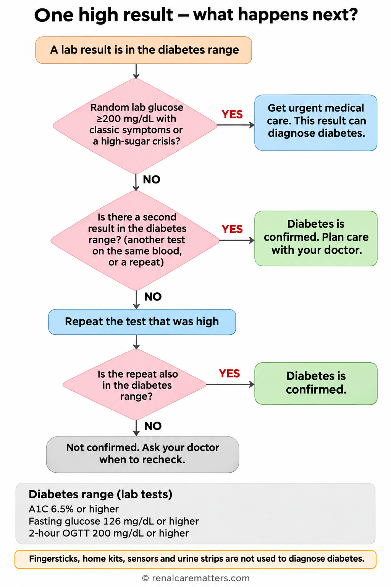
Without clear symptoms, one high result is a clue. A second diabetes-range result confirms the diagnosis; otherwise ask your doctor when to recheck.Kung walang malinaw na sintomas, ang isang mataas na resulta ay palatandaan lamang. Ang ikalawang resulta sa saklaw ng diabetes ang nagkukumpirma; kung wala, itanong sa doktor kung kailan uulitin.Kon walay klarong sintomas, ang usa ka taas nga resulta timailhan lang. Ang ikaduhang resulta sa sakup sa diabetes maoy mokumpirma; kon wala, pangutan-a ang doktor kon kanus-a balikon.Nung alang malinaw a sintomas, ing metung a matas a resulta tanda yamu. Ing ikadwang resulta king sakup ning diabetes ing magkumpirma; nung ala, kutang me ing doktor nu kapilan ulitan.
- A1C
- Glycated hemoglobin
- OGTT
- Oral glucose tolerance test (75 g)
Preparation and "FBS" on a Philippine lab slipPaghahanda at ang "FBS" sa lab slip sa PilipinasPagpangandam ug ang "FBS" sa lab slip sa PilipinasPaghanda at ing "FBS" king lab slip king Pilipinas
Many Philippine labs print FBS (fasting blood sugar) for the fasting plasma glucose test. Confirm it was a true fast of at least eight hours. For an OGTT, follow the lab's instructions; the ADA advises eating at least 150 g of carbohydrate a day for the three days before, because a low-carbohydrate diet can falsely raise the result. A two-hour reading after an ordinary meal is a different test and cannot be read against the OGTT row. Acute illness, stress and steroid medicines can raise glucose for a while.Maraming lab sa Pilipinas ang naglalagay ng FBS (fasting blood sugar) para sa fasting plasma glucose. Tiyaking totoong nag-ayuno ka nang hindi bababa sa walong oras. Para sa OGTT, sundin ang tagubilin ng lab; payo ng ADA na kumain ng hindi bababa sa 150 g na carbohydrate bawat araw sa tatlong araw bago nito, dahil ang diyetang mababa sa carbohydrate ay maaaring magpataas nang mali sa resulta. Ang dalawang-oras na resulta pagkatapos ng karaniwang pagkain ay ibang test at hindi maihahambing sa hanay ng OGTT. Ang matinding sakit, stress at mga gamot na steroid ay maaaring magpataas ng glucose nang pansamantala.Daghang lab sa Pilipinas ang nagbutang og FBS (fasting blood sugar) para sa fasting plasma glucose. Siguroha nga tinuod kang nagpuasa sulod sa labing menos walo ka oras. Para sa OGTT, sunda ang giya sa lab; tambag sa ADA nga mokaon og labing menos 150 g nga carbohydrate kada adlaw sulod sa tulo ka adlaw sa wala pa, kay ang diyeta nga ubos og carbohydrate mahimong makapataas nga sayop sa resulta. Ang duha ka oras nga resulta human sa ordinaryong pagkaon lahi nga test ug dili ikatandi sa laray sa OGTT. Ang grabe nga sakit, stress ug mga tambal nga steroid mahimong makapataas sa glucose sa kadali.Dakal a lab king Pilipinas ing magbutang FBS (fasting blood sugar) para king fasting plasma glucose. Siguraduan mu a tutu kang menag-ayunu e kukulang walung oras. Para king OGTT, tuparan ing tagubilin ning lab; payu ning ADA a mangan e kukulang 150 g a carbohydrate balang aldo kilub ning atlung aldo bayu ita, uling ing diyeta a mababa king carbohydrate malyari nang pataasan a mali ing resulta. Ing adwang oras a resulta kaibat ning karaniwang pamangan aliwang test ya at e malyaring ipadikit king lane ning OGTT. Ing malalang sakit, stress at reng gamut a steroid malyari dang pataasan ing glucose king saglit.
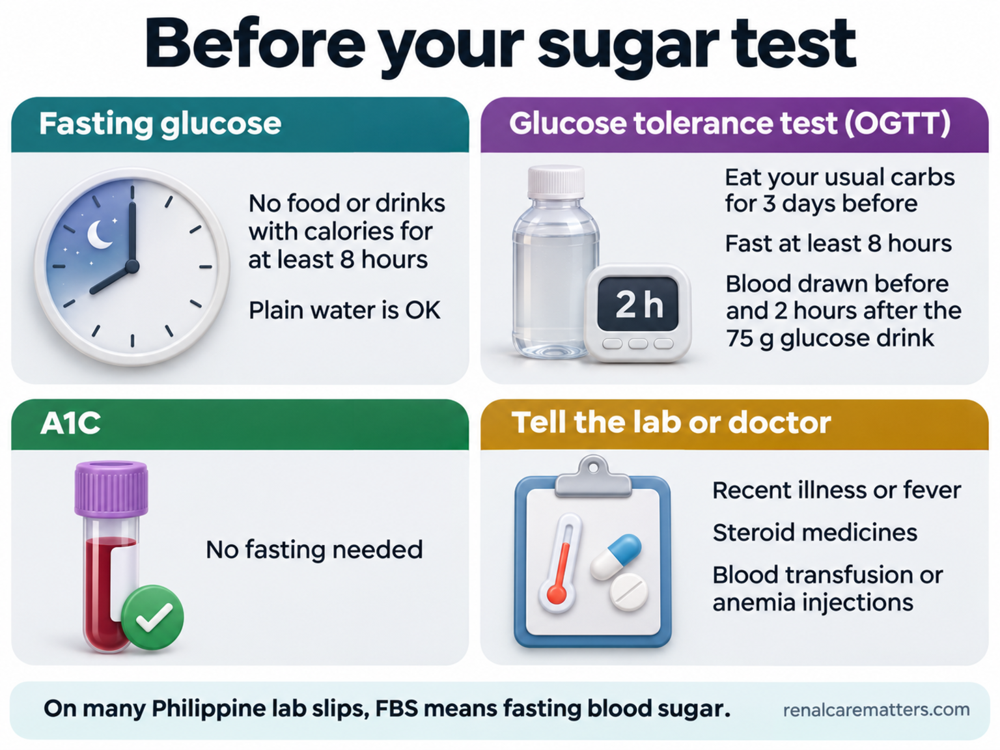
Preparation changes the result. Fast for at least eight hours for a fasting test, eat your usual carbohydrates for three days before a glucose tolerance test, and tell the lab about illness, steroids or a recent transfusion.Binabago ng paghahanda ang resulta. Mag-ayuno nang hindi bababa sa walong oras para sa fasting test, kainin ang karaniwang carbohydrate sa tatlong araw bago ang glucose tolerance test, at sabihin sa lab ang sakit, steroid o kamakailang transfusion.Ang pagpangandam makausab sa resulta. Pagpuasa labing menos walo ka oras alang sa fasting test, kan-a ang naandang carbohydrate sulod sa tulo ka adlaw sa wala pa ang glucose tolerance test, ug isulti sa lab ang sakit, steroid o bag-ong transfusion.Babaguan ning paghanda ing resulta. Mag-ayunu e kukulang walung oras para king fasting test, kanan ing karaniwang carbohydrate kilub ning atlung aldo bayu ing glucose tolerance test, at sabyan king lab ing sakit, steroid o kaybat a transfusion.
- OGTT
- Oral glucose tolerance test
- A1C
- Glycated hemoglobin
- FBS
- Fasting blood sugar
Some numbers are not used for diagnosis at all: fingerstick meters, home A1C kits, glucose sensors and urine sugar strips. A random lab glucose of 200 mg/dL or more without symptoms is not a diagnosis, but it deserves a prompt visit and a proper lab test. A random value below 200 mg/dL does not rule diabetes out. Pregnancy uses a different testing pathway. After gestational diabetes, the ADA recommends an OGTT 4 to 12 weeks after delivery, then lifelong checks every one to three years. New thirst, frequent urination and unexplained weight loss need prompt assessment at any age, because type 1 diabetes can begin in adulthood.May mga numerong hindi ginagamit sa diagnosis: fingerstick meter, home A1C kit, glucose sensor at urine sugar strip. Ang random na lab glucose na 200 mg/dL pataas na walang sintomas ay hindi pa diagnosis, pero kailangan nito ng agarang konsulta at tamang lab test. Ang random na resultang mas mababa sa 200 mg/dL ay hindi nangangahulugang walang diabetes. Iba ang paraan ng pagsusuri kapag buntis. Pagkatapos ng gestational diabetes, inirerekomenda ng ADA ang OGTT 4 hanggang 12 linggo pagkapanganak, at pagkatapos ay panghabambuhay na pagsusuri bawat isa hanggang tatlong taon. Ang bagong pagkauhaw, madalas na pag-ihi at hindi maipaliwanag na pagpayat ay kailangang masuri agad sa anumang edad, dahil maaaring magsimula ang type 1 diabetes sa pagtanda.Aduna mga numero nga dili gigamit sa diagnosis: fingerstick meter, home A1C kit, glucose sensor ug urine sugar strip. Ang random nga lab glucose nga 200 mg/dL pataas nga walay sintomas dili pa diagnosis, apan kinahanglan kini og dali nga konsulta ug husto nga lab test. Ang random nga resulta nga ubos sa 200 mg/dL wala magpasabot nga walay diabetes. Lahi ang paagi sa pagsusi kon mabdos. Human sa gestational diabetes, girekomendar sa ADA ang OGTT 4 ngadto sa 12 ka semana human manganak, unya tibuok-kinabuhi nga pagsusi matag usa ngadto sa tulo ka tuig. Ang bag-ong kauhaw, kanunay nga pag-ihi ug pagniwang nga walay hinungdan kinahanglan susihon dayon sa bisan unsang edad, kay ang type 1 diabetes mahimong magsugod bisan hamtong na.Atin numeru a e gagamitan king diagnosis: fingerstick meter, home A1C kit, glucose sensor at urine sugar strip. Ing random a lab glucose a 200 mg/dL pataas a alang sintomas e ya pa diagnosis, oneng kailangan na ning agad a konsulta at tamang lab test. Ing random a resulta a mas mababa king 200 mg/dL e na buring sabyan alang diabetes. Aliwa ing paraan ning pamanuri nung mabaktat. Kaibat ning gestational diabetes, irekomenda ning ADA ing OGTT 4 angga 12 domingu kaibat ning pamanganak, kaibat panyabye a pamanuri balang metung angga atlung banwa. Ing bayung pangmaw, masikan a pamangilu at pamamaya a e malino nung nanu ing sanhi kailangan dang suriyan agad king nanu mang edad, uling malyaring mumpisa ing type 1 diabetes king pamanyatua.
A1C, your meter and your sensor answer different questionsMagkaibang tanong ang sinasagot ng A1C, meter at sensorLahi-lahi nga pangutana ang gitubag sa A1C, meter ug sensorAliwa-aliwang kutang ing sasagutan ning A1C, meter at sensor
| MeasurementSukatSukodSukad | Question it answersTanong na sinasagotPangutana nga gitubagKutang a sasagutan na | What to look atAno ang titingnanUnsa ang tan-awonNanu ing lawan |
|---|---|---|
| A1C | How much sugar exposure have I had lately?Gaano karami ang asukal na tumama sa akin nitong mga nakaraang buwan?Unsa kadaghan ang asukal nga naigo nako niining milabay nga mga bulan?Ngan karakal a asukal ing tinaman kanaku karing milabas a bulan? | The trend and your personal goal. It can hide overnight or dialysis-day lows.Ang takbo at ang personal mong layunin. Maaari nitong itago ang pagbaba sa gabi o sa araw ng dialysis.Ang dagan ug ang imong personal nga tumong. Mahimo niining itago ang pag-ubos sa gabii o sa adlaw sa dialysis.Ing dalan at ing personal mung tuknang. Malyari nang itagu ing pamaba king bengi o king aldo ning dialysis. |
| Fingerstick meterFingerstick meterFingerstick meterFingerstick meter | What is my sugar right now?Ano ang asukal ko ngayon mismo?Unsa ang akong asukal karon mismo?Nanu ing asukal ku ngeni mismu? | Timing: before or after meals, with symptoms, around medicines and dialysis. Use it to double-check a sensor reading that does not match how you feel.Oras: bago o pagkatapos kumain, kapag may sintomas, kaugnay ng gamot at dialysis. Gamitin ito para suriin ang sensor reading na hindi tugma sa nararamdaman mo.Oras: sa wala pa o human mokaon, kon adunay sintomas, may kalabotan sa tambal ug dialysis. Gamita kini aron susihon ang sensor reading nga dili motugma sa imong gibati.Oras: bayu o kaibat mangan, nung atin sintomas, kaugnay ning gamut at dialysis. Gamitan me iti bang suriyan ing sensor reading a e tugma king daramdaman mu. |
| Glucose sensor (CGM) reportUlat ng glucose sensor (CGM)Report sa glucose sensor (CGM)Report ning glucose sensor (CGM) | When am I high or low, and for how long?Kailan ako mataas o mababa, at gaano katagal?Kanus-a ko taas o ubos, ug unsa kadugay?Kapilan ku matas o mababa, at ngan kabayu? | First, enough data. Then time spent low, then time in range, then time high.Una, sapat na datos. Pagkatapos, oras na mababa, oras sa tamang saklaw, at oras na mataas.Una, igo nga datos. Dayon, oras nga ubos, oras sa sakto nga sakup, ug oras nga taas.Mumuna, sapat a datos. Kaibat, oras a mababa, oras king tamang sakup, at oras a matas. |
| Estimated average glucose (eAG) and glucose management indicator (GMI)Estimated average glucose (eAG) at glucose management indicator (GMI)Estimated average glucose (eAG) ug glucose management indicator (GMI)Estimated average glucose (eAG) at glucose management indicator (GMI) | What does my A1C mean as an average sugar, or my sensor average as an A1C-like number?Ano ang ibig sabihin ng A1C ko bilang average na asukal, o ng average ng sensor bilang numerong parang A1C?Unsay buot ipasabot sa akong A1C isip average nga asukal, o sa average sa sensor isip numero nga sama sa A1C?Nanu ing buring sabyan ning A1C ku bilang average a asukal, o ning average ning sensor bilang numeru a antimong A1C? | eAG is calculated from a lab A1C. GMI is calculated from sensor readings. They cover different periods and need not match.Ang eAG ay kinukuwenta mula sa lab A1C. Ang GMI ay mula sa sensor. Magkaiba ang panahong saklaw nila at hindi kailangang magtugma.Ang eAG gikuwenta gikan sa lab A1C. Ang GMI gikan sa sensor. Lahi ang panahon nga ilang sakup ug dili kinahanglan magtugma.Ing eAG kukwentan manibat king lab A1C. Ing GMI manibat king sensor. Aliwa ing panaun a sasakupan da at e kailangan magtugma. |
For many nonpregnant adults with diabetes, an A1C below 7% is a reasonable goal when it can be reached without dangerous lows. If you are stable and at goal, A1C is usually checked at least twice a year, and about every three months after a medicine change. These are reference goals, not your personal goal. Older adults, people with frequent lows, pregnancy, and people on dialysis each need a plan set with their own care team.Para sa maraming adultong may diabetes na hindi buntis, makatwirang layunin ang A1C na mas mababa sa 7% kung maaabot ito nang walang mapanganib na pagbaba. Kung matatag ka at nasa layunin, karaniwang sinusuri ang A1C nang hindi bababa sa dalawang beses sa isang taon, at mga bawat tatlong buwan pagkatapos magpalit ng gamot. Ito ay mga sangguniang layunin, hindi ang personal mong layunin. Ang matatanda, ang madalas bumababa ang asukal, ang buntis, at ang nagda-dialysis ay may kani-kaniyang planong itinatakda kasama ang kanilang care team.Para sa daghang hamtong nga adunay diabetes nga dili mabdos, makatarunganon nga tumong ang A1C nga ubos sa 7% kon maabot kini nga walay peligrosong pag-ubos. Kon lig-on ka ug anaa sa tumong, kasagaran susihon ang A1C labing menos kaduha sa usa ka tuig, ug mga matag tulo ka bulan human mausab ang tambal. Kini mga reperensya nga tumong, dili imong personal nga tumong. Ang mga tigulang, ang kanunay nga moubos ang asukal, ang mabdos, ug ang nagdialysis adunay kaugalingong plano nga gihimo uban sa ilang care team.Para karing dakal a matua a atin diabetes a e mabaktat, makatwiran yang tuknang ing A1C a mas mababa king 7% nung abutan ya a alang mapanganib a pamaba. Nung matatag ka at atiu na king tuknang, karaniwan dang suriyan ing A1C e kukulang makalwa king metung a banwa, at balang atlung bulan kaibat ning pamaglilipat gamut. Reperensya lang tuknang deni, e la ing personal mung tuknang. Reng matua, reng masikan mababa ing asukal, reng mabaktat, at reng magdialysis atin lang sariling plano a pagdesisyunan kaibat ning care team ra.
Reading a glucose sensor reportPagbasa ng ulat ng glucose sensorPagbasa sa report sa glucose sensorPamasa king report ning glucose sensor
Most sensor reports use a standard one-page summary called the ambulatory glucose profile (AGP). Read it in order. First check that the sensor was worn about 14 days and was active at least 70% of the time; with less data the picture may not represent your usual weeks. Next look at the time below range (TBR), because lows are the most immediate danger. Then look at time in range (TIR) and time above range (TAR).Karamihan sa ulat ng sensor ay gumagamit ng karaniwang buod na isang pahina na tinatawag na ambulatory glucose profile (AGP). Basahin ito nang sunod-sunod. Una, tiyaking nasuot ang sensor nang mga 14 na araw at gumagana nang hindi bababa sa 70% ng oras; kung kulang ang datos, maaaring hindi nito ipakita ang karaniwan mong mga linggo. Sunod, tingnan ang time below range (TBR), dahil ang pagbaba ng asukal ang pinakamadaliang panganib. Pagkatapos ay tingnan ang time in range (TIR) at time above range (TAR).Kadaghanan sa report sa sensor naggamit og standard nga usa ka panid nga summary nga gitawag og ambulatory glucose profile (AGP). Basaha kini nga sunod-sunod. Una, siguroha nga gisul-ob ang sensor sulod sa mga 14 ka adlaw ug naglihok labing menos 70% sa oras; kon kulang ang datos, mahimong dili kini magpakita sa imong naandan nga mga semana. Sunod, tan-awa ang time below range (TBR), kay ang pag-ubos sa asukal ang labing dinaliang peligro. Dayon tan-awa ang time in range (TIR) ug time above range (TAR).Kakaldalan king report ning sensor gamitan dang karaniwang buod a metung a bulung a ausan dang ambulatory glucose profile (AGP). Basan me sunud-sunud. Mumuna, siguraduan a sinulud ya ing sensor 14 aldo at gagana ya e kukulang 70% ning oras; nung kulang ing datos, malyaring e na ipakit ing karaniwan mung domingu. Kaibat, lawan ing time below range (TBR), uling ing pamaba ning asukal ing pekamadaliang panganib. Kaibat lawan ing time in range (TIR) at time above range (TAR).
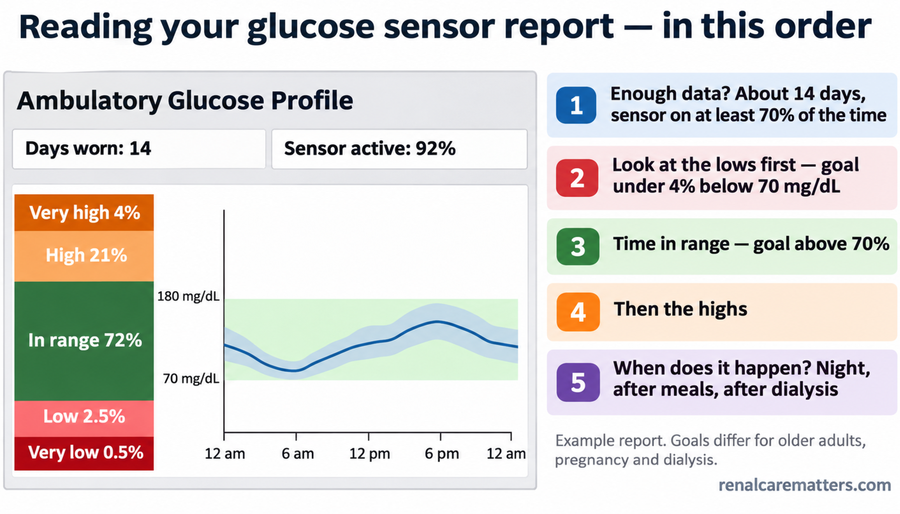
Read every sensor report in the same order: enough data, lows, time in range, highs, then when the highs and lows happen.Basahin ang bawat ulat ng sensor sa iisang pagkakasunod: sapat na datos, pagbaba, oras sa tamang saklaw, pagtaas, at kailan nangyayari ang taas at baba.Basaha ang matag report sa sensor sa samang han-ay: igo nga datos, pag-ubos, oras sa sakto nga sakup, pagsaka, ug kanus-a mahitabo ang taas ug ubos.Basan me ing balang report ning sensor king parehung sunud-sunud: sapat a datos, pamaba, oras king tamang sakup, pangatas, at nu kapilan mapalyari ing atas at baba.
- AGP
- Ambulatory glucose profile
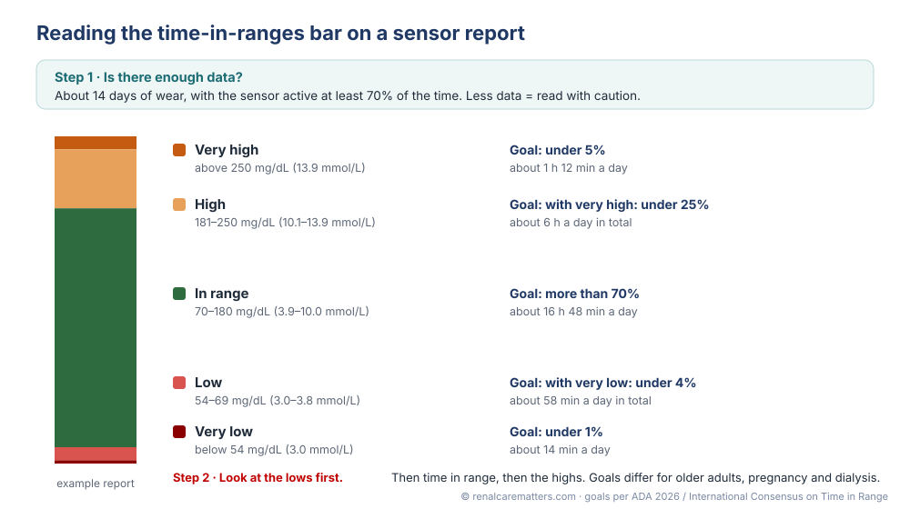
Check data coverage first, then lows. For many nonpregnant adults the reference goals are more than 70% in range (about 16 hours 48 minutes a day), under 4% below 70 mg/dL (about 58 minutes) and under 1% below 54 mg/dL (about 14 minutes). Older and higher-risk adults often have looser goals.Suriin muna ang dami ng datos, pagkatapos ang pagbaba. Para sa maraming adultong hindi buntis, ang sangguniang layunin ay higit sa 70% sa tamang saklaw (mga 16 oras at 48 minuto bawat araw), mas mababa sa 4% na nasa ilalim ng 70 mg/dL (mga 58 minuto) at mas mababa sa 1% na nasa ilalim ng 54 mg/dL (mga 14 minuto). Mas maluwag madalas ang layunin para sa matatanda at mas mataas ang panganib.Susiha una ang gidaghanon sa datos, dayon ang pag-ubos. Para sa daghang hamtong nga dili mabdos, ang reperensya nga tumong mao ang labaw sa 70% sa sakto nga sakup (mga 16 ka oras ug 48 ka minuto kada adlaw), ubos sa 4% nga ilalom sa 70 mg/dL (mga 58 ka minuto) ug ubos sa 1% nga ilalom sa 54 mg/dL (mga 14 ka minuto). Mas luag kasagaran ang tumong alang sa mga tigulang ug sa mas taas ang peligro.Suriyan me mumuna ing karakal ning datos, kaibat ing pamaba. Para karing dakal a matua a e mabaktat, ing reperensyang tuknang mipangalabas 70% king tamang sakup (16 oras at 48 minutu balang aldo), mas mababa 4% a lalam ning 70 mg/dL (58 minutu) at mas mababa 1% a lalam ning 54 mg/dL (14 minutu). Mas maluag madalas ing tuknang para karing matua at mas matas ing panganib.
- TIR
- Time in range, 70–180 mg/dL
- TBR
- Time below range
- TAR
- Time above range
Turn a report percentage into time per dayGawing oras bawat araw ang porsiyento sa ulatHimoa nga oras kada adlaw ang porsiyento sa reportGawan yang oras balang aldo ing porsiyentu king report
Each 1% of a 24-hour day is about 14 minutes. This simple arithmetic is for understanding your report; it does not judge whether a number is safe for you. Nothing you type is stored or sent.Bawat 1% ng 24 na oras ay mga 14 na minuto. Ang simpleng kuwentang ito ay para maunawaan ang ulat; hindi nito sinasabi kung ligtas ang numero para sa iyo. Walang itinatago o ipinapadala sa anumang i-type mo.Ang matag 1% sa 24 ka oras mga 14 ka minuto. Kini nga yano nga kuwenta para masabtan ang report; dili kini mohukom kon luwas ba ang numero alang kanimo. Walay gitipigan o gipadala sa bisan unsang imong i-type.Balang 1% ning 24 oras 14 minutu. Ing simpling kuwenta a iti para mabalu me ing report; e na sasabyan nung malino ing numeru para keka. Alang itatagu o ipapadala king nanu mang i-type mu.
4% ≈ 58 min / day
When an A1C and a sensor disagree, neither automatically wins. Ask whether the two cover the same weeks, whether something changed recently (a new medicine, an illness, a blood transfusion, iron or anemia injections), and whether the sensor data were complete. In kidney disease the sensor and fingerstick pattern often tells your team more than A1C alone.Kapag hindi magkatugma ang A1C at sensor, walang awtomatikong tama. Itanong kung parehong mga linggo ang saklaw nila, kung may nagbago kamakailan (bagong gamot, sakit, transfusion ng dugo, iniksyon para sa iron o anemia), at kung kumpleto ang datos ng sensor. Sa sakit sa bato, mas marami madalas ang sinasabi ng sensor at fingerstick sa iyong team kaysa sa A1C lamang.Kon dili magkauyon ang A1C ug sensor, walay awtomatikong husto. Pangutan-a kon parehas ba nga mga semana ang ilang sakup, kon aduna bay nausab bag-o lang (bag-ong tambal, sakit, transfusion sa dugo, indyeksyon para sa iron o anemia), ug kon kompleto ba ang datos sa sensor. Sa sakit sa kidney, mas daghan kasagaran ang isulti sa sensor ug fingerstick sa imong team kaysa A1C lamang.Nung e magkatugma ing A1C at sensor, alang awtomatikung tama. Kutang mu nu parehung domingu ing sakup da, nung atin minaliwa kaybat pa (bayung gamut, sakit, transfusion ning daya, iniksyun para king iron o anemia), at nung kumpletu ing datos ning sensor. King sakit king batu, mas dakal madalas ing sabyan ning sensor at fingerstick king team mu kesa king A1C mu.
Why A1C can look better than your sugar really isBakit maaaring mas maganda ang A1C kaysa sa totoong asukal moNgano nga mahimong mas nindot ang A1C kaysa sa tinuod nimong asukalNung obat malyaring mas mayap ing A1C kesa king tutung asukal mu
Healthy kidneys make erythropoietin, the hormone that tells bone marrow to produce red blood cells. In advanced chronic kidney disease (CKD), that signal weakens and red cells die sooner. Treatment with an erythropoiesis-stimulating agent (ESA), iron, or a transfusion floods the blood with young red cells that have had little time to collect sugar. All of these can make A1C read lower than your real average glucose.Ang malulusog na bato ay gumagawa ng erythropoietin, ang hormone na nag-uutos sa bone marrow na gumawa ng pulang selula. Sa malalang chronic kidney disease (CKD), humihina ang senyas na iyon at mas maagang namamatay ang pulang selula. Ang paggamot gamit ang erythropoiesis-stimulating agent (ESA), iron, o transfusion ay nagpupuno sa dugo ng mga batang pulang selula na kaunti pa lang ang nakuhang asukal. Lahat ng ito ay maaaring magpababa ng A1C kaysa sa tunay mong average na glucose.Ang himsog nga kidney naghimo og erythropoietin, ang hormone nga nagsugo sa bone marrow sa paghimo og pulang selula. Sa grabe nga chronic kidney disease (CKD), mohuyang kana nga senyales ug mas sayo nga mamatay ang pulang selula. Ang pagtambal gamit ang erythropoiesis-stimulating agent (ESA), iron, o transfusion mopuno sa dugo og mga batan-ong pulang selula nga diyutay pa ang nakuhang asukal. Kining tanan mahimong makapaubos sa A1C kaysa sa tinuod nimong average nga glucose.Ing masalusung a batu gagawa yang erythropoietin, ing hormone a mag-utus king bone marrow a gawa yang mayang selula. King malalang chronic kidney disease (CKD), manyulapi ing senyas a ita at mas agang mamate reng mayang selula. Ing pamanggamut king erythropoiesis-stimulating agent (ESA), iron, o transfusion punan nang daya dareng anak a mayang selula a kakaunti pa ing asukal a akwa ra. Ngan deti malyari dang pababan ing A1C kesa king tutung average mung glucose.
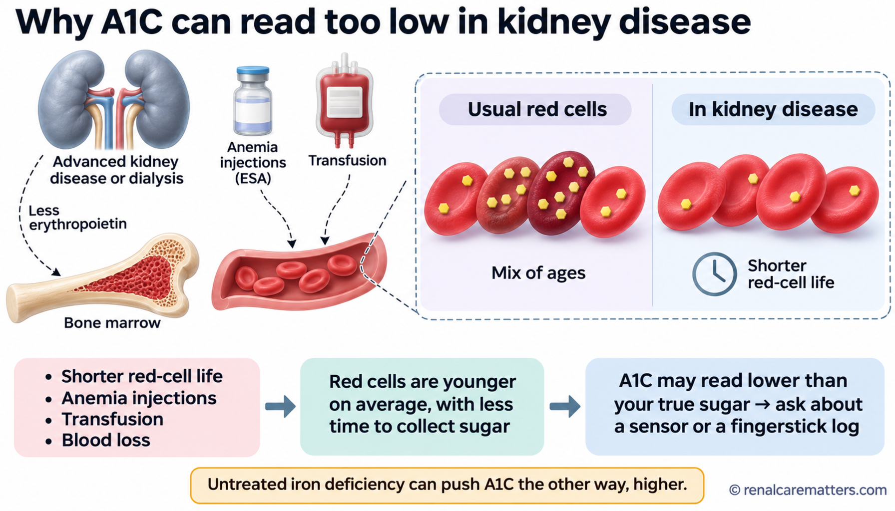
In advanced kidney disease, red cells live shorter lives, and anemia injections or transfusions add young red cells. Young cells have collected less sugar, so A1C can look better than your real sugar.Sa malalang sakit sa bato, mas maikli ang buhay ng pulang selula, at ang iniksyon sa anemia o transfusion ay nagdadagdag ng mga batang pulang selula. Kaunti pa ang asukal na nakolekta ng mga batang selula, kaya maaaring mas maganda ang A1C kaysa sa totoong asukal mo.Sa grabe nga sakit sa kidney, mas mubo ang kinabuhi sa pulang selula, ug ang indyeksyon sa anemia o transfusion magdugang og batan-ong pulang selula. Gamay pa ang asukal nga nakolekta sa batan-ong selula, mao nga mahimong mas nindot ang A1C kaysa sa tinuod nimong asukal.King malalang sakit king batu, mas maikli ing bye dareng mayang selula, at ing iniksyun king anemia o transfusion magdagdag lang anak a mayang selula. Kakaunti pa ing asukal a ekolekta dareng anak a selula, anya malyaring mas mayap ing A1C kesa king tutung asukal mu.
- A1C
- Glycated hemoglobin
- ESA
- Erythropoiesis-stimulating agent (anemia injection)
Dialysis adds a second twist. A large study of 342 adults on hemodialysis who wore sensors for 10 days found that glucose usually fell during the treatment and then rebounded for two to three hours afterward, sometimes well above the starting level. In a related study of 420 people on dialysis, those taking diabetes medicines averaged an A1C of 7.0%, which looks well controlled, yet on average spent only 43% of the day in range. A1C alone could not show those swings.May ikalawang epekto ang dialysis. Isang malaking pag-aaral ng 342 adultong nagha-hemodialysis na nagsuot ng sensor nang 10 araw ang nakakita na kadalasang bumababa ang glucose habang nagda-dialysis at pagkatapos ay umaakyat muli nang dalawa hanggang tatlong oras, kung minsan ay mas mataas pa sa simula. Sa kaugnay na pag-aaral ng 420 taong nagda-dialysis, ang mga umiinom ng gamot sa diabetes ay may average na A1C na 7.0%, na mukhang kontrolado, pero sa average ay 43% lang ng araw ang nasa tamang saklaw. Hindi maipakita ng A1C lamang ang mga pagbabagong iyon.Adunay ikaduhang epekto ang dialysis. Usa ka dakong pagtuon sa 342 ka hamtong nga naghemodialysis nga nagsul-ob og sensor sulod sa 10 ka adlaw nakakita nga kasagaran manaog ang glucose samtang nagdialysis ug unya mosaka pag-usab sulod sa duha ngadto sa tulo ka oras, usahay mas taas pa sa sinugdanan. Sa may kalabotan nga pagtuon sa 420 ka tawo nga nagdialysis, ang mga nag-inom og tambal sa diabetes adunay average nga A1C nga 7.0%, nga morag kontrolado, apan sa average 43% ra sa adlaw ang anaa sa sakto nga sakup. Dili kini maipakita sa A1C lamang.Atin pang ikadwang epektu ing dialysis. Metung a maragul a pamag-aral karing 342 a matua a maghemodialysis a sinulud sensor kilub ning 10 aldo, akit da a karaniwan manaba ing glucose kabang magdialysis at kaibat mangatas pasibayu kilub ning adwa angga atlung oras, nung kapilan mas matas pa kesa king mumpisa. King metung a kaugnay a pamag-aral karing 420 a tau a magdialysis, ding manginum gamut king diabetes atin lang average a A1C a 7.0%, a antimong kontroladu, oneng king average 43% mu ning aldo ing atiu king tamang sakup. E ipakit ning A1C mu deting pamaglilipat.
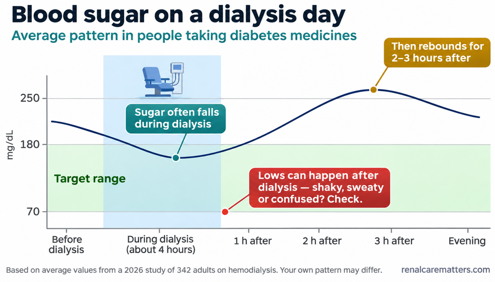
On average, sugar falls during hemodialysis and rebounds for two to three hours afterward. Lows are also more likely after a session, so timing your checks around dialysis matters.Sa average, bumababa ang asukal habang nagha-hemodialysis at tumataas muli nang dalawa hanggang tatlong oras pagkatapos. Mas malamang din ang pagbaba pagkatapos ng sesyon, kaya mahalaga ang oras ng pagsusuri kaugnay ng dialysis.Sa average, manaog ang asukal samtang naghemodialysis ug mosaka pag-usab sulod sa duha ngadto sa tulo ka oras human niini. Mas lagmit usab ang pag-ubos human sa sesyon, mao nga importante ang oras sa pagsusi may kalabotan sa dialysis.King average, manaba ing asukal kabang maghemodialysis at mangatas pasibayu kilub ning adwa angga atlung oras kaibat. Mas malyari mu rin ing pamaba kaibat ning sesyun, anya mayalaga ing oras ning pamanuri kaugnay ning dialysis.
What to ask your dialysis and diabetes teamsAno ang itatanong sa iyong dialysis at diabetes teamUnsa ang pangutan-on sa imong dialysis ug diabetes teamNanu ing kutang king dialysis at diabetes team mu
Ask whether a glucose sensor, or a fingerstick log timed around dialysis, would help. If a sensor is not available, keep a simple log that pairs each reading with your dialysis days, meals, symptoms and medicines, at the times your team suggests. Report shakiness, sweating or confusion after dialysis, and very high readings in the evening after a session.Itanong kung makatutulong ang glucose sensor, o fingerstick log na nakatakda kaugnay ng dialysis. Kung walang sensor, gumawa ng simpleng talaan na nagpapares sa bawat resulta sa araw ng dialysis, pagkain, sintomas at gamot, sa mga oras na iminumungkahi ng team. Iulat ang panginginig, pagpapawis o pagkalito pagkatapos ng dialysis, at napakataas na resulta sa gabi pagkatapos ng sesyon.Pangutan-a kon makatabang ba ang glucose sensor, o fingerstick log nga gitakda may kalabotan sa dialysis. Kon walay sensor, paghimo og yano nga talaan nga nagpares sa matag resulta sa adlaw sa dialysis, pagkaon, sintomas ug tambal, sa mga oras nga gisugyot sa team. Ireport ang pagkurog, pagsingot o kalibog human sa dialysis, ug taas kaayo nga resulta sa gabii human sa sesyon.Kutang mu nu makatulung ing glucose sensor, o fingerstick log a matakda kaugnay ning dialysis. Nung alang sensor, gawa kang simpling talaan a ipares na ing balang resulta king aldo ning dialysis, pamangan, sintomas at gamut, karing oras a irekomenda ning team. Ireport mu ing pamangalukluk, pamamawas o pamanalikumbo kaibat ning dialysis, at ing sobrang matas a resulta king bengi kaibat ning sesyun.
Two other blood tests, fructosamine and glycated albumin, measure sugar stuck to blood proteins over about two to three weeks. They avoid the red-cell problem but have their own: low albumin, protein loss in the urine and the type of dialysis can all shift them. In a 2026 study of people on dialysis, none of the three blood markers matched sensor glucose closely enough to settle a disagreement on its own.May dalawa pang pagsusuri ng dugo, ang fructosamine at glycated albumin, na sumusukat ng asukal na nakakapit sa mga protina ng dugo sa loob ng mga dalawa hanggang tatlong linggo. Iniiwasan nila ang problema sa pulang selula pero may sarili silang problema: ang mababang albumin, pagkawala ng protina sa ihi at uri ng dialysis ay maaaring magpabago sa mga ito. Sa isang pag-aaral noong 2026 ng mga nagda-dialysis, wala sa tatlong marker sa dugo ang sapat na tugma sa glucose ng sensor para lutasin ang hindi pagkakatugma nang mag-isa.Adunay duha pa ka pagsulay sa dugo, ang fructosamine ug glycated albumin, nga nagsukod sa asukal nga nakapyot sa mga protina sa dugo sulod sa mga duha ngadto sa tulo ka semana. Malikayan nila ang problema sa pulang selula apan aduna silay kaugalingong problema: ang ubos nga albumin, pagkawala sa protina sa ihi ug ang klase sa dialysis mahimong makausab niini. Sa usa ka pagtuon niadtong 2026 sa mga nagdialysis, walay usa sa tulo ka marker sa dugo ang igo nga motugma sa glucose sa sensor aron masulbad ang dili pagkauyon nga siya ra.Atin pang adwang pamanuri king daya, ing fructosamine at glycated albumin, a susukat king asukal a makakapit karing protina ning daya kilub ning adwa angga atlung domingu. Iwasan da ing problema king mayang selula oneng atin lang sariling problema: ing mababang albumin, ing pamanalis protina king ilu at ing klasi ning dialysis malyari dang alilan deti. King metung a pamag-aral king 2026 karing magdialysis, alang metung karing atlung marker king daya a sapat a tugma king glucose ning sensor bang lutasan ing e pamagtugma nung kaya-kaya na.
Filtering and leaking are different questionsMagkaibang tanong ang pagsala at pagtagasLahi nga pangutana ang pagsala ug pagtuloAliwang kutang ing pamanyala at pamanulu
The eGFR estimates how much blood your kidneys filter, usually from a creatinine blood test. The UACR compares the albumin in one urine sample with its creatinine, and shows whether the kidney filters have started to leak protein. Albumin can leak while filtering is still normal, and filtering can fall while albumin stays low, so one test cannot stand in for the other. The ADA recommends both at least once a year, starting when type 2 diabetes is diagnosed, or five years after type 1 diabetes begins.Tinatantya ng eGFR kung gaano karaming dugo ang sinasala ng iyong bato, kadalasan mula sa creatinine sa dugo. Inihahambing ng UACR ang albumin sa isang sample ng ihi sa creatinine nito, at ipinapakita kung nagsimula nang tumagas ng protina ang mga salaan ng bato. Maaaring tumagas ang albumin habang normal pa ang pagsala, at maaaring bumaba ang pagsala habang mababa ang albumin, kaya hindi maaaring palitan ng isang test ang isa pa. Inirerekomenda ng ADA ang dalawa nang hindi bababa sa isang beses kada taon, simula nang ma-diagnose ang type 2 diabetes, o limang taon pagkasimula ng type 1 diabetes.Gibanabana sa eGFR kon pila ka dugo ang gisala sa imong kidney, kasagaran gikan sa creatinine sa dugo. Gitandi sa UACR ang albumin sa usa ka sample sa ihi sa creatinine niini, ug gipakita kon nagsugod na bang motulo og protina ang mga salaan sa kidney. Ang albumin mahimong motulo samtang normal pa ang pagsala, ug ang pagsala mahimong moubos samtang ubos ang albumin, mao nga dili mapulihan sa usa ka test ang lain. Girekomendar sa ADA ang duha labing menos kausa kada tuig, sugod sa pagka-diagnose sa type 2 diabetes, o lima ka tuig human magsugod ang type 1 diabetes.Tantyan ning eGFR nu ngan karakal a daya ing sasalan ning batu mu, karaniwan manibat king creatinine king daya. Ipadikit ning UACR ing albumin king metung a sample ning ilu king creatinine na, at ipakit na nu mumpisa nang tumulu protina reng salaan ning batu. Malyaring tumulu ing albumin kabang normal pa ing pamanyala, at malyaring manaba ing pamanyala kabang mababa ing albumin, anya e malyaring alilan ning metung a test ing aliwa. Irekomenda ning ADA ing adwa e kukulang misan king metung a banwa, mumpisa kanita a mediagnose ing type 2 diabetes, o limang banwa kaibat mumpisa ing type 1 diabetes.
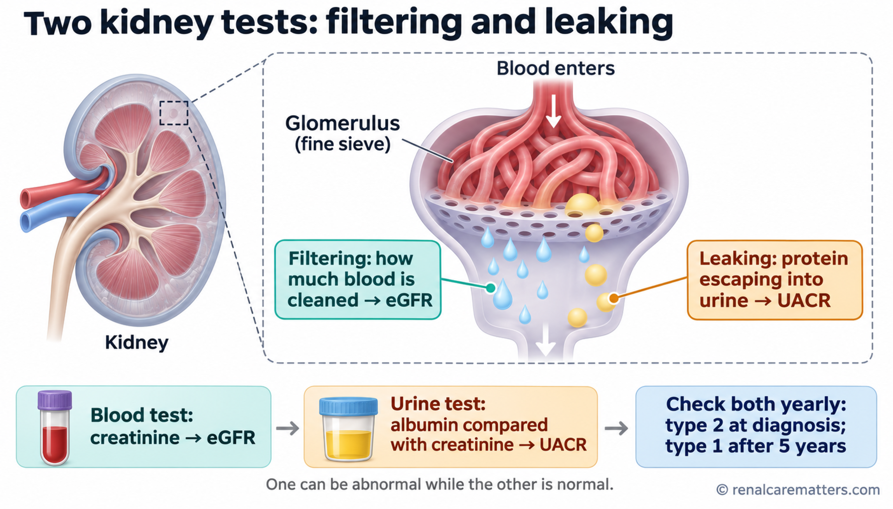
eGFR tells you how much blood the kidney filters clean. UACR tells you whether protein is leaking through them. One can be abnormal while the other is normal, so you need both.Sinasabi ng eGFR kung gaano karaming dugo ang nalilinis ng mga salaan ng bato. Sinasabi ng UACR kung may protinang tumatagas sa mga ito. Maaaring abnormal ang isa habang normal ang isa pa, kaya kailangan ang dalawa.Gisulti sa eGFR kon pila ka dugo ang malimpyohan sa mga salaan sa kidney. Gisulti sa UACR kon aduna bay protina nga motulo niini. Mahimong abnormal ang usa samtang normal ang lain, mao nga kinahanglan ang duha.Sasabyan ning eGFR nu ngan karakal a daya ing malinis dareng salaan ning batu. Sasabyan ning UACR nu atin protina a tutulu karela. Malyaring abnormal ing metung kabang normal ing aliwa, anya kailangan ya ing adwa.
- eGFR
- Estimated glomerular filtration rate
- UACR
- Urine albumin-to-creatinine ratio
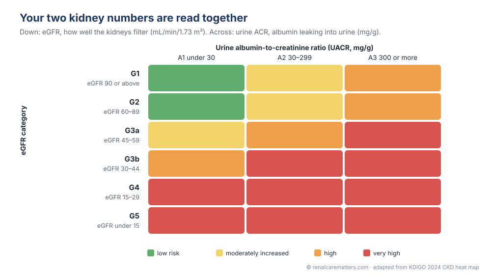
Risk depends on both numbers together. Green is lower risk; red is very high risk. Each category must be confirmed over time before it is used to label chronic kidney disease.Nakadepende ang panganib sa dalawang numero nang magkasama. Berde ang mas mababang panganib; pula ang napakataas na panganib. Kailangang makumpirma ang bawat kategorya sa paglipas ng panahon bago gamitin para tawaging chronic kidney disease.Nagdepende ang peligro sa duha ka numero nga magkauban. Berde ang mas ubos nga peligro; pula ang taas kaayo nga peligro. Kinahanglan makumpirma ang matag kategorya sa paglabay sa panahon sa dili pa gamiton aron tawgon nga chronic kidney disease.Makadepende ing panganib king adwang numeru a misaup. Berde ing mas mababang panganib; mayang ing sobrang matas a panganib. Kailangan yang makumpirma ing balang kategorya king panaun bayu gamitan bang ausan yang chronic kidney disease.
- eGFR
- Estimated glomerular filtration rate
- UACR
- Urine albumin-to-creatinine ratio
- G1–G5
- eGFR categories
- A1–A3
- Albuminuria categories
A UACR below 30 mg/g is normal to mildly increased, 30 to 299 mg/g is moderately increased, and 300 mg/g or more is severely increased. Urine albumin varies from day to day, so a high result is checked again: the ADA looks for two of three samples to be high over three to six months, and Kidney Disease: Improving Global Outcomes (KDIGO), the international kidney guideline group, prefers a first-morning sample when possible. Hard exercise in the past day, fever or infection, very high sugar, heart failure, very high blood pressure and menstruation can all raise UACR for a while. A UACR of 64 mg/g with an eGFR of 88 deserves follow-up even though filtering looks normal.Ang UACR na mas mababa sa 30 mg/g ay normal hanggang bahagyang mataas, 30 hanggang 299 mg/g ay katamtamang mataas, at 300 mg/g pataas ay malubhang mataas. Nag-iiba-iba ang albumin sa ihi araw-araw, kaya inuulit ang mataas na resulta: hinahanap ng ADA na dalawa sa tatlong sample ang mataas sa loob ng tatlo hanggang anim na buwan, at mas gusto ng KDIGO, ang pandaigdigang grupo ng gabay sa bato, ang unang ihi sa umaga kung maaari. Ang matinding ehersisyo sa nakaraang araw, lagnat o impeksyon, napakataas na asukal, heart failure, napakataas na presyon at regla ay maaaring magpataas ng UACR nang pansamantala. Ang UACR na 64 mg/g na may eGFR na 88 ay kailangan pa ring subaybayan kahit mukhang normal ang pagsala.Ang UACR nga ubos sa 30 mg/g normal ngadto sa medyo taas, 30 ngadto sa 299 mg/g kasarangang taas, ug 300 mg/g pataas grabe ka taas. Nag-usab-usab ang albumin sa ihi matag adlaw, mao nga balikon ang taas nga resulta: gipangita sa ADA nga duha sa tulo ka sample ang taas sulod sa tulo ngadto sa unom ka bulan, ug mas gusto sa KDIGO, ang internasyonal nga grupo sa giya sa kidney, ang unang ihi sa buntag kon mahimo. Ang kusog nga ehersisyo sa miaging adlaw, hilanat o impeksyon, taas kaayo nga asukal, heart failure, taas kaayo nga presyon ug regla mahimong makapataas sa UACR sa kadali. Ang UACR nga 64 mg/g nga adunay eGFR nga 88 angay gihapong sundan bisan og morag normal ang pagsala.Ing UACR a mas mababa king 30 mg/g normal angga kakaunting matas, 30 angga 299 mg/g katamtamang matas, at 300 mg/g pataas malalang matas. Mibabagu-bagu ing albumin king ilu balang aldo, anya ulitan ing matas a resulta: panintunan ning ADA a adwa karing atlung sample ing matas kilub ning atlu angga anam a bulan, at mas buri ning KDIGO, ing pandaigdigang grupu ning gabay king batu, ing mumunang ilu king abak nung malyari. Ing masikan a ehersisyu king milabas a aldo, lagnat o impeksyun, sobrang matas a asukal, heart failure, sobrang matas a presyun at regla malyari dang pataasan ing UACR king saglit. Ing UACR a 64 mg/g a atin eGFR a 88 kailangan pa murin subaybayan uli na man antimong normal ing pamanyala.
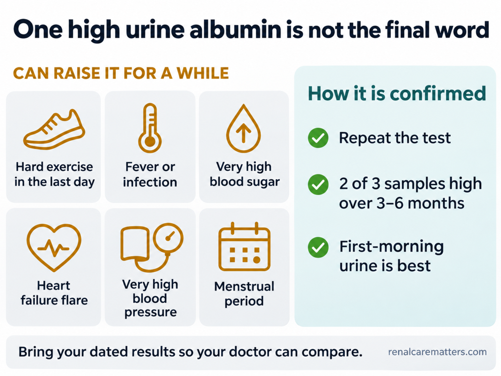
Exercise, fever, very high sugar, heart failure, very high blood pressure and menstruation can raise urine albumin for a while. A high result is confirmed when two of three samples over three to six months are high.Ang ehersisyo, lagnat, napakataas na asukal, heart failure, napakataas na presyon at regla ay maaaring magpataas ng albumin sa ihi nang pansamantala. Kumpirmado ang mataas na resulta kapag dalawa sa tatlong sample sa loob ng tatlo hanggang anim na buwan ang mataas.Ang ehersisyo, hilanat, taas kaayo nga asukal, heart failure, taas kaayo nga presyon ug regla mahimong makapataas sa albumin sa ihi sa kadali. Kumpirmado ang taas nga resulta kon duha sa tulo ka sample sulod sa tulo ngadto sa unom ka bulan ang taas.Ing ehersisyu, lagnat, sobrang matas a asukal, heart failure, sobrang matas a presyun at regla malyari dang pataasan ing albumin king ilu king saglit. Kumpirmadu ya ing matas a resulta nung adwa karing atlung sample kilub ning atlu angga anam a bulan ing matas.
- UACR
- Urine albumin-to-creatinine ratio
Some patterns suggest that diabetes may not be the whole story: kidney problems that start suddenly, blood in the urine, albumin that climbs quickly, or an eGFR that drops fast. These deserve a closer look, explained in the guide on when kidney disease in diabetes is not diabetic.May mga pattern na nagpapahiwatig na maaaring hindi lang diabetes ang dahilan: problema sa bato na biglang nagsimula, dugo sa ihi, albumin na mabilis tumataas, o eGFR na mabilis bumababa. Kailangan ng mas masusing pagsusuri ang mga ito, na ipinaliwanag sa gabay kung kailan hindi dahil sa diabetes ang sakit sa bato ng may diabetes.Adunay mga pattern nga nagpakita nga tingali dili lang diabetes ang hinungdan: problema sa kidney nga kalit nagsugod, dugo sa ihi, albumin nga paspas mosaka, o eGFR nga paspas moubos. Kinahanglan kini og mas lawom nga pagsusi, nga gipatin-aw sa giya kon kanus-a dili tungod sa diabetes ang sakit sa kidney sa adunay diabetes.Atin pattern a magpakilala a malyaring e mu diabetes ing sanhi: problema king batu a biglang mekapamumpisa, daya king ilu, albumin a mabilis mangatas, o eGFR a mabilis manaba. Kailangan dang mas masusing pamanuri deti, a menyampat king gabay nung kapilan e uli ning diabetes ing sakit king batu ning atin diabetes.
When kidney disease in diabetes may not be diabetic →Kapag ang sakit sa bato ng may diabetes ay maaaring hindi dahil sa diabetes →Kon ang sakit sa kidney sa adunay diabetes tingali dili tungod sa diabetes →Nung ing sakit king batu ning atin diabetes malyaring e uli ning diabetes →
What to do before the number gets interpretedAno ang gagawin bago pa bigyang-kahulugan ang numeroUnsa ang buhaton bisan sa wala pa hubaron ang numeroNanu ing gawan bayu pa mibye kahulugan ing numeru
If you are awake, able to swallow and your reading is below 70 mg/dL, or you feel shaky, sweaty or confused, take 15 to 20 g of fast sugar, such as glucose tablets or half a cup of regular (not diet) soft drink, then recheck after 15 minutes and repeat if you are still low. Follow your own written low-glucose plan if your team gave you one, because people with kidney disease may need different amounts or timing. Fruit juice is high in potassium, so it is not the best choice if you have been told to limit potassium. If someone cannot swallow safely, has a seizure or is unconscious, get emergency help and give nothing by mouth.Kung gising ka, nakakalunok at ang resulta mo ay mas mababa sa 70 mg/dL, o nanginginig ka, pinapawisan o nalilito, uminom o kumain ng 15 hanggang 20 g na mabilis na asukal, tulad ng glucose tablet o kalahating tasa ng karaniwang (hindi diet) softdrink, pagkatapos ay suriin muli makalipas ang 15 minuto at ulitin kung mababa pa rin. Sundin ang sarili mong nakasulat na plano para sa mababang asukal kung binigyan ka ng team, dahil ang may sakit sa bato ay maaaring mangailangan ng ibang dami o oras. Mataas sa potassium ang fruit juice, kaya hindi ito ang pinakamainam kung pinapayuhan kang limitahan ang potassium. Kung ang tao ay hindi makalunok nang ligtas, nangingisay o walang malay, tumawag ng emergency at huwag magpainom o magpakain.Kon nagmata ka, makatulon ug ang imong resulta ubos sa 70 mg/dL, o nagkurog ka, nagsingot o naglibog, pag-inom o pagkaon og 15 ngadto sa 20 g nga paspas nga asukal, sama sa glucose tablet o tunga sa tasa nga ordinaryong (dili diet) softdrink, dayon susiha pag-usab human sa 15 ka minuto ug balika kon ubos gihapon. Sunda ang imong kaugalingong sinulat nga plano para sa ubos nga asukal kon gihatagan ka sa team, kay ang adunay sakit sa kidney mahimong manginahanglan og lahi nga gidaghanon o oras. Taas sa potassium ang fruit juice, mao nga dili kini ang labing maayo kon gisugo ka nga limitahan ang potassium. Kon ang tawo dili makatulon nga luwas, nangisog o walay panimuot, tawag og emergency ug ayaw siya pakan-a o paimna.Nung gising ka, makaluk ka at ing resulta mu mas mababa king 70 mg/dL, o mangalukluk ka, mamawas o manalikumbo, inum o mangan kang 15 angga 20 g a mabilis a asukal, anti ing glucose tablet o kalahating tasa ning karaniwang (e diet) softdrink, kaibat suriyan pasibayu kaibat ning 15 minutu at ulitan nung mababa ya pa. Tuparan me ing sarili mung nakasulat a plano para king mababang asukal nung binye ne ing team, uling ing atin sakit king batu malyaring mangailangan aliwang karakal o oras. Matas king potassium ing fruit juice, anya e ya ing pekamayap nung pepayuan da kang limitan ing potassium. Nung ing tau e makaluk a malino, mangisay o alang malay, tawag kang emergency at e ya painuman o pakanan.
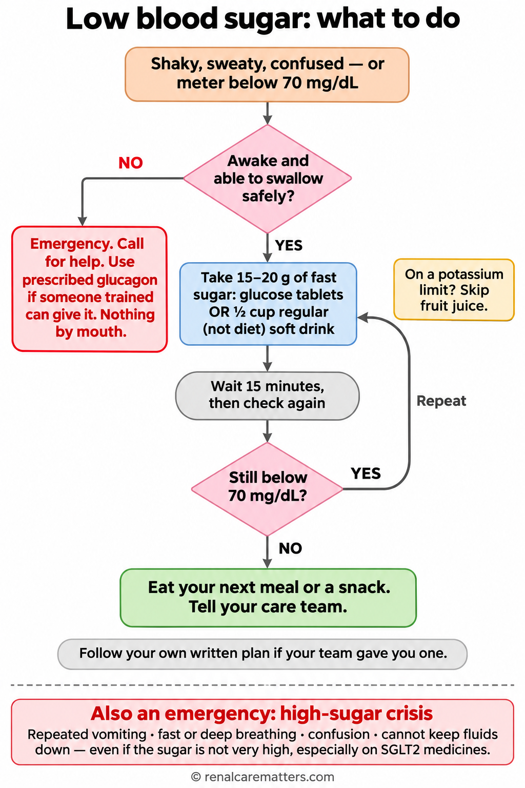
If you are awake and can swallow, take 15 to 20 grams of fast sugar and recheck in 15 minutes. If someone cannot swallow, has a seizure or is unconscious, call for emergency help and give nothing by mouth.Kung gising ka at nakakalunok, uminom ng 15 hanggang 20 gramo ng mabilis na asukal at suriin muli makalipas ang 15 minuto. Kung ang tao ay hindi makalunok, nangingisay o walang malay, tumawag ng emergency at huwag magpainom o magpakain.Kon nagmata ka ug makatulon, pag-inom og 15 ngadto sa 20 ka gramo nga paspas nga asukal ug susiha pag-usab human sa 15 ka minuto. Kon ang tawo dili makatulon, nangisog o walay panimuot, tawag og emergency ug ayaw siya pakan-a o paimna.Nung gising ka at makaluk, inum kang 15 angga 20 gramu a mabilis a asukal at suriyan pasibayu kaibat ning 15 minutu. Nung ing tau e makaluk, mangisay o alang malay, tawag kang emergency at e ya painuman o pakanan.
- SGLT2
- Sodium-glucose cotransporter 2 (a class of diabetes and kidney medicines)
High sugar becomes dangerous when it comes with vomiting, abdominal pain, fast or deep breathing, extreme thirst, drowsiness or confusion. These can signal diabetic ketoacidosis (DKA) or a hyperosmolar state. People taking SGLT2 inhibitors can develop ketoacidosis with only modestly raised glucose, so do not be reassured by a "normal" meter reading if you feel this ill.Nagiging mapanganib ang mataas na asukal kapag may kasamang pagsusuka, pananakit ng tiyan, mabilis o malalim na paghinga, matinding uhaw, antok o pagkalito. Maaaring senyales ito ng diabetic ketoacidosis (DKA) o hyperosmolar state. Ang mga umiinom ng SGLT2 inhibitor ay maaaring magkaroon ng ketoacidosis kahit bahagya lang ang taas ng glucose, kaya huwag mapanatag sa "normal" na resulta ng meter kung ganito kasama ang pakiramdam mo.Mahimong peligroso ang taas nga asukal kon kauban ang pagsuka, sakit sa tiyan, paspas o lawom nga pagginhawa, grabe nga kauhaw, katulgon o kalibog. Mahimong timailhan kini sa diabetic ketoacidosis (DKA) o hyperosmolar state. Ang mga nag-inom og SGLT2 inhibitor mahimong magka-ketoacidosis bisan og diyutay ra ang taas sa glucose, mao nga ayaw pagpakalma sa "normal" nga resulta sa meter kon ingon niini ka grabe ang imong gibati.Mapanganib ya ing matas a asukal nung atin kaibat a pamanyuka, sakit ning atiyan, mabilis o malalam a pamangisnawa, sobrang pangmaw, katuktukan o pamanalikumbo. Malyaring tanda ya iti ning diabetic ketoacidosis (DKA) o hyperosmolar state. Reng manginum SGLT2 inhibitor malyari lang magkaketoacidosis uli na man kakaunti yamu ing atas ning glucose, anya e ka manatag king "normal" a resulta ning meter nung makanyan kasakit ing daramdaman mu.
Bring the right papers and ask three questionsDalhin ang tamang papeles at magtanong ng tatlong bagayDad-a ang husto nga mga papeles ug pangutana og tulo ka butangDarun me ing tamang papeles at kutang kang atlung bage
Bring dated results with their units, your meter or sensor report and your medicine list, and ask whether a result needs repeating.Dalhin ang may petsang resulta kasama ang unit, ang ulat ng meter o sensor at listahan ng gamot, at itanong kung kailangang ulitin ang resulta.Dad-a ang resulta nga adunay petsa ug unit, ang report sa meter o sensor ug lista sa tambal, ug pangutana kon kinahanglan ba balikon ang resulta.Darun me ing resulta a atin petsa at unit, ing report ning meter o sensor at listaan ning gamut, at kutang mu nu kailangan yang ulitan ing resulta.
- eGFR
- Estimated glomerular filtration rate
- ACR
- Albumin-to-creatinine ratio (urine)
- The dated lab report with the test name and units (mg/dL or mmol/L, mg/g or mg/mmol).Ang may petsang lab report na may pangalan ng test at unit (mg/dL o mmol/L, mg/g o mg/mmol).Ang lab report nga adunay petsa, ngalan sa test ug unit (mg/dL o mmol/L, mg/g o mg/mmol).Ing lab report a atin petsa, lagyu ning test at unit (mg/dL o mmol/L, mg/g o mg/mmol).
- Whether you were fasting, and for how long.Kung nag-ayuno ka, at gaano katagal.Kon nagpuasa ka, ug unsa kadugay.Nung menag-ayunu ka, at ngan kabayu.
- Your recent meter log or sensor report.Ang kamakailang talaan ng meter o ulat ng sensor.Ang bag-ong talaan sa meter o report sa sensor.Ing kaybat a talaan ning meter o report ning sensor.
- All medicines, plus any recent illness or steroid course.Lahat ng gamot, at anumang kamakailang sakit o steroid.Tanang tambal, ug bisan unsang bag-ong sakit o steroid.Ngan ding gamut, at nanu mang kaybat a sakit o steroid.
- Any transfusion, iron infusion or anemia injections in the past three months.Anumang transfusion, iron infusion o iniksyon sa anemia sa nakaraang tatlong buwan.Bisan unsang transfusion, iron infusion o indyeksyon sa anemia sulod sa miaging tulo ka bulan.Nanu mang transfusion, iron infusion o iniksyun king anemia king milabas a atlung bulan.
- If on dialysis: your dialysis days and any symptoms after sessions.Kung nagda-dialysis: ang mga araw ng dialysis at anumang sintomas pagkatapos ng sesyon.Kon nagdialysis: ang mga adlaw sa dialysis ug bisan unsang sintomas human sa sesyon.Nung magdialysis: reng aldo ning dialysis at nanu mang sintomas kaibat ning sesyun.
Three questions worth askingTatlong tanong na dapat itanongTulo ka pangutana nga angay ipangutanaAtlung kutang a dapat kutang
"Does this result need repeating?" · "What is my own glucose goal?" · "Have we checked both my eGFR and my urine albumin-to-creatinine ratio (ACR) this year?""Kailangan bang ulitin ang resultang ito?" · "Ano ang sarili kong layunin sa glucose?" · "Nasuri na ba ang eGFR at urine albumin-to-creatinine ratio (ACR) ko ngayong taon?""Kinahanglan ba nga balikon kini nga resulta?" · "Unsa ang akong kaugalingong tumong sa glucose?" · "Nasusi na ba ang akong eGFR ug urine albumin-to-creatinine ratio (ACR) karong tuiga?""Kailangan yang ulitan ing resultang iti?" · "Nanu ing sarili kung tuknang king glucose?" · "Nasuriyan na ing eGFR at urine albumin-to-creatinine ratio (ACR) ku ngeni a banwa?"
Local screening advice and practical accessLokal na payo sa screening at praktikal na accessLokal nga tambag sa screening ug praktikal nga accessLokal a payu king screening at praktikal a access
The Philippine periodic health examination guidelines advise checking apparently healthy adults for diabetes with fasting plasma glucose, with A1C as an option, starting at age 40 or earlier when risk factors are present. These guidelines do not recommend routine kidney screening tests for healthy adults without diabetes. If you already have diabetes, the advice is different: both eGFR and UACR should be checked at least yearly. A1C, UACR and fasting glucose are available in most hospital and private laboratories. Sensors are usually paid out of pocket, so ask your team whether a short wear period or a structured fingerstick log would answer the same question.Ang mga gabay ng Pilipinas sa periodic health examination ay nagpapayo na suriin ang mga mukhang malusog na adulto para sa diabetes gamit ang fasting plasma glucose, na may A1C bilang opsyon, simula sa edad 40 o mas maaga kung may risk factor. Hindi inirerekomenda ng mga gabay na ito ang regular na kidney screening test para sa malulusog na adultong walang diabetes. Kung may diabetes ka na, iba ang payo: dapat suriin ang eGFR at UACR nang hindi bababa sa isang beses kada taon. Ang A1C, UACR at fasting glucose ay makukuha sa karamihan ng ospital at pribadong laboratoryo. Ang sensor ay kadalasang binabayaran mula sa sariling bulsa, kaya itanong sa iyong team kung ang maikling pagsusuot o maayos na fingerstick log ay makasasagot sa parehong tanong.Ang mga giya sa Pilipinas sa periodic health examination nagtambag nga susihon ang mga morag himsog nga hamtong para sa diabetes gamit ang fasting plasma glucose, uban ang A1C isip opsyon, sugod sa edad 40 o mas sayo kon adunay risk factor. Wala girekomendar niini nga mga giya ang regular nga kidney screening test alang sa himsog nga hamtong nga walay diabetes. Kon aduna na kay diabetes, lahi ang tambag: kinahanglan susihon ang eGFR ug UACR labing menos kausa kada tuig. Ang A1C, UACR ug fasting glucose makuha sa kadaghanan sa ospital ug pribadong laboratoryo. Ang sensor kasagaran bayran gikan sa kaugalingong bulsa, mao nga pangutan-a ang imong team kon ang mubo nga pagsul-ob o maayong fingerstick log makatubag sa samang pangutana.Reng gabay ning Pilipinas king periodic health examination ipapayu dang suriyan reng antimong masalusung a matua para king diabetes gamit ing fasting plasma glucose, a atin A1C bilang opsyun, mumpisa king edad 40 o mas aga nung atin risk factor. E ra irekomenda deting gabay ing regular a kidney screening test para karing masalusung a matua a alang diabetes. Nung atin kang diabetes, aliwa ing payu: dapat suriyan ing eGFR at UACR e kukulang misan king metung a banwa. Ing A1C, UACR at fasting glucose makwa la king kakaldalan a ospital at pribadung laboratoryu. Ing sensor karaniwan dang bayaran manibat king sariling bulsa, anya kutang mu king team mu nu ing maikling pamanulud o mayap a fingerstick log makasagut king parehung kutang.
Common questionsMga karaniwang tanongMga kasagarang pangutanaReng karaniwang kutang
Each glycemic test samples a different time window and carries a different bias
Glycated hemoglobin (A1C, HbA1c), fasting plasma glucose (FPG), the 2-hour value of a 75-g oral glucose tolerance test (OGTT), self-monitored blood glucose (SMBG), continuous glucose monitoring (CGM), fructosamine and glycated albumin (GA) are not interchangeable estimates of one quantity. Each integrates glycemia over a different interval and fails in a different way. For diagnosis, the American Diabetes Association (ADA) 2026 Standards keep the familiar laboratory cut points and require confirmation without unequivocal hyperglycemia. For monitoring, the ADA now treats CGM-derived time in range (TIR) as a primary metric beside A1C. In chronic kidney disease (CKD), and most of all on dialysis, A1C loses calibration, and the 2025–2026 Blood Sugar Sensing On Maintenance Dialysis (BLOSSOM) analyses show how far: treated diabetes on dialysis averaged an A1C of 7.0% with a mean TIR of 43%.
Kidney testing runs in parallel. The estimated glomerular filtration rate (eGFR) and the urine albumin-to-creatinine ratio (UACR) measure different injuries, so both are needed at least yearly in every adult with type 2 diabetes from diagnosis and in type 1 diabetes from five years. Neither glycemic nor kidney categories should be assigned from a single specimen when the clinical picture allows confirmation.
Diagnose with laboratory glucose or standardized A1C, then confirm
Two diabetes-range results, from two tests on one sample or a prompt repeat. Use plasma glucose when A1C is unreliable.
Monitor with A1C and CGM together; read CGM in order
Data sufficiency, then time below range, then TIR and time above range. Investigate A1C–GMI gaps rather than picking a winner.
In advanced CKD, weight the pattern over the A1C
Prioritize detecting lows and post-dialysis hyperglycemia. Pair eGFR with UACR and confirm albuminuria before staging.
What each marker integrates, and why kidney failure distorts it
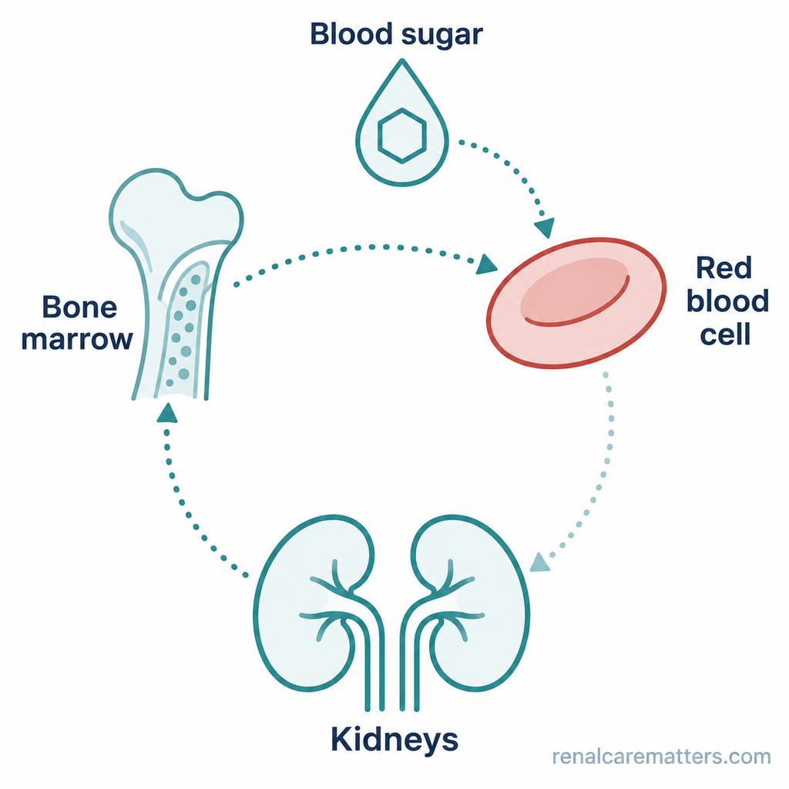
Kidneys signal the marrow to make red cells through erythropoietin, and glucose glycates hemoglobin inside those cells. Kidney failure changes red-cell kinetics, and with them the meaning of A1C.
- A1C
- Glycated hemoglobin
A1C. Glucose binds the N-terminal valine of the hemoglobin β-chain through a nonenzymatic Schiff base that rearranges to a stable Amadori product. The fraction glycated is set by the mean glucose concentration and by the time each erythrocyte spends exposed to it. With a normal red-cell lifespan of roughly 120 days, about half of an A1C value reflects the preceding 30 days, so it is a time-weighted mean, not a flat 90-day average. Anything that shortens mean erythrocyte age lowers A1C for a given glucose: hemolysis, blood loss, transfusion, erythropoiesis-stimulating agent (ESA) therapy, iron repletion with reticulocytosis, and the shortened survival of uremia. Iron deficiency without treatment ages the circulating pool and tends to raise A1C. Hemoglobin variants and assay chemistry add analytic interference that depends on the method used (established physiology; magnitude varies by individual and assay).
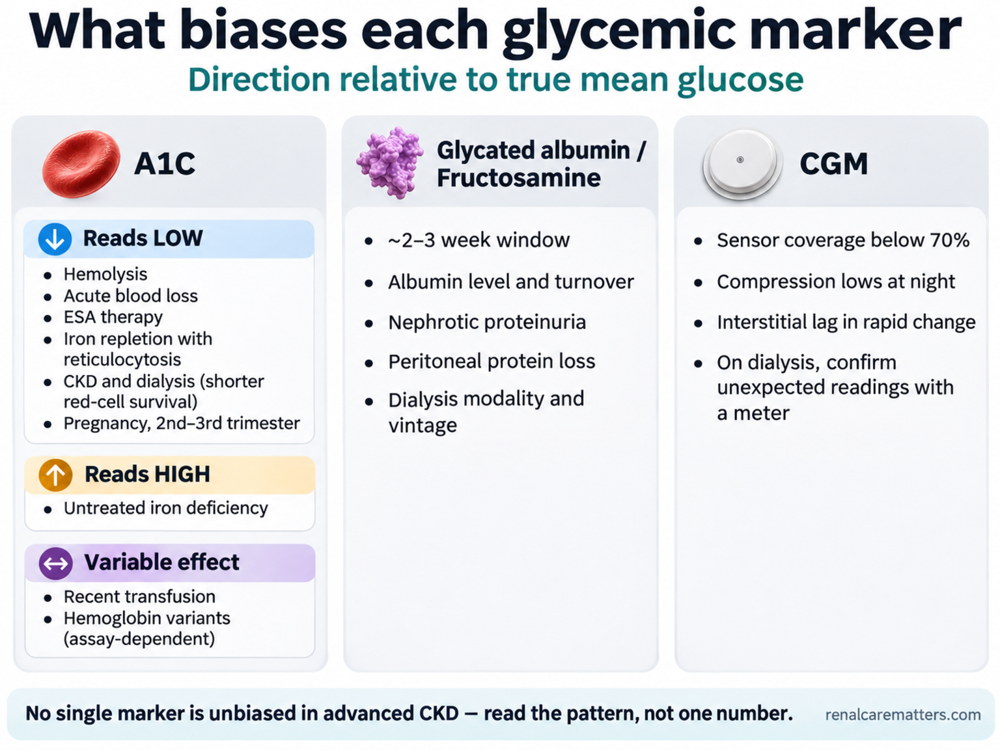
Each marker fails differently: A1C with red-cell age and assay, glycated albumin and fructosamine with albumin turnover, and CGM with coverage, lag and larger error on dialysis.
- A1C
- Glycated hemoglobin
- ESA
- Erythropoiesis-stimulating agent
- CGM
- Continuous glucose monitoring
- CKD
- Chronic kidney disease
Fructosamine and glycated albumin. These measure ketoamine adducts on serum proteins, predominantly albumin, with a half-life of about 2–3 weeks. They bypass erythrocyte kinetics but inherit albumin kinetics: hypoalbuminemia, nephrotic-range proteinuria, peritoneal protein loss, and inflammation all shift the value. Glycated albumin is reported as a ratio to total albumin, which partly corrects for concentration but not for turnover.
CGM. Sensors measure interstitial glucose by glucose oxidase chemistry. Interstitial glucose lags plasma by several minutes during rapid change. In dialysis, shifts in interstitial volume, ultrafiltration and uremic interferents are plausible sources of extra error. Accuracy studies in this population support use but show more error than in the general population (evidence below).
Dialysis-specific glucose physiology. Hemodialysis removes glucose toward the dialysate concentration and clears insulin, glucagon and incretins. In the BLOSSOM hemodialysis cohort, insulin, glucagon and glucagon-like peptide-1 (GLP-1) fell by a median of 38%, 43% and 38% across a session, glucose declined during treatment, and a post-dialysis rebound followed. Peritoneal dialysis supplies a continuous dextrose load, and mean glucose was higher with peritoneal dialysis than hemodialysis among BLOSSOM participants without diabetes (141 vs 121 mg/dL).
Criteria, confirmation and discordance
| Test | Prediabetes | Diabetes | Conditions |
|---|---|---|---|
| A1C | 5.7–6.4% (39–47 mmol/mol) | ≥6.5% (≥48 mmol/mol) | Laboratory method certified by the National Glycohemoglobin Standardization Program (NGSP) and traceable to the Diabetes Control and Complications Trial (DCCT) |
| FPG | 100–125 mg/dL (5.6–6.9 mmol/L) | ≥126 mg/dL (≥7.0 mmol/L) | No caloric intake ≥8 h |
| 2-h plasma glucose, 75-g OGTT | 140–199 mg/dL (7.8–11.0 mmol/L) | ≥200 mg/dL (≥11.1 mmol/L) | Standardized load; ≥150 g/day carbohydrate for 3 days beforehand |
| Random plasma glucose | — | ≥200 mg/dL (≥11.1 mmol/L) | Only with classic symptoms or hyperglycemic crisis |
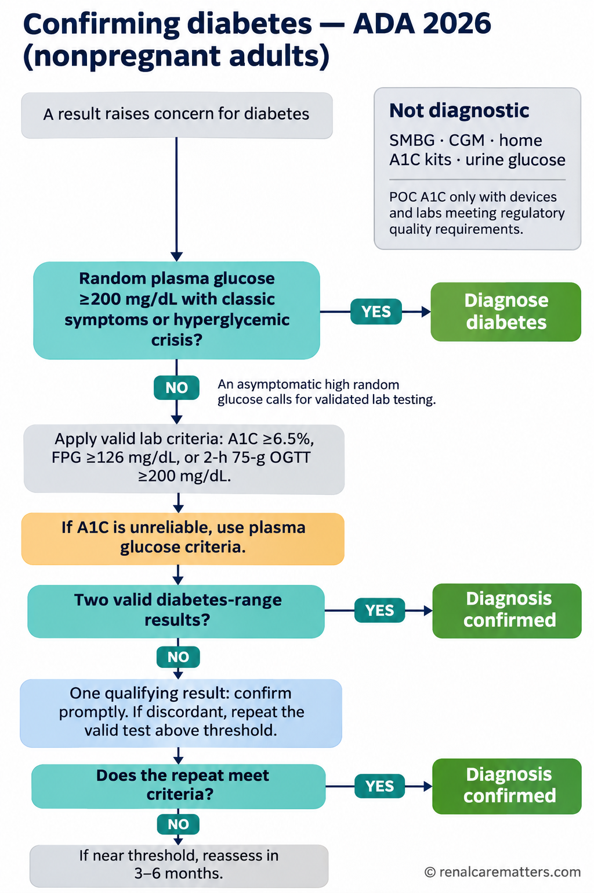
ADA 2026 confirmation logic for nonpregnant adults: diagnose on unequivocal hyperglycemia; otherwise require two valid diabetes-range results, repeating the test above threshold when results are discordant.
- ADA
- American Diabetes Association
- FPG
- Fasting plasma glucose
- OGTT
- Oral glucose tolerance test
- ESA
- Erythropoiesis-stimulating agent
- SMBG
- Self-monitored blood glucose
- CGM
- Continuous glucose monitoring
- POC
- Point of care
NGSP certification and DCCT traceability are what make a single A1C cut point portable across laboratories. ADA recommendation 2.1b states that without unequivocal hyperglycemia, diagnosis requires confirmatory testing. Two abnormal results may come from different tests on the same sample (for example A1C and FPG) or from the same test at two time points. When two tests are discordant, the test above its cut point is repeated; a repeat A1C of 6.6% after an initial 6.7% confirms diabetes even if FPG is 115 mg/dL. Near-threshold, unconfirmed results warrant reassessment in 3–6 months, which is a different interval from the prompt repeat that confirms an above-threshold result.
The tests detect overlapping, not identical, populations. ADA notes that the 2-hour OGTT is more sensitive than FPG or A1C. A 2026 machine-learning model built on National Health and Nutrition Examination Survey (NHANES) data and validated in the Diabetes Prevention Program Outcomes Study illustrates the gap: among people with A1C <6.5% and FPG <126 mg/dL, sensitivity for OGTT-defined diabetes was 0.53 for a logistic model of A1C and FPG. That supports considering an OGTT after an equivocal screen in a high-risk person; it does not yet justify adopting the model, which has no outcome or local calibration data.
When not to diagnose from A1C
Use plasma glucose criteria when red-cell turnover or hemoglobin is abnormal: hemoglobin variants with an interfering assay, pregnancy (second and third trimesters) and the postpartum period, recent blood loss or transfusion, hemolysis, ESA therapy, advanced CKD and dialysis, and conditions such as human immunodeficiency virus (HIV) infection treated with certain antiretrovirals. Point-of-care A1C devices are acceptable for diagnosis only when the device and the laboratory meet the applicable regulatory and quality requirements; consumer home kits, SMBG, CGM and urine glucose are not diagnostic.
Screening. ADA 2026 advises risk-based testing at any age in adults with overweight or obesity plus a risk factor, and testing beginning at age 35 for all others, repeated at least every three years when normal and yearly with prediabetes. After gestational diabetes, a 75-g OGTT at 4–12 weeks postpartum with nonpregnancy criteria, then lifelong screening every 1–3 years. New polyuria, polydipsia and weight loss should prompt evaluation for type 1 diabetes at any adult age; islet autoantibodies and C-peptide help classify selected cases.
Keep local screening policy separate from ADA age criteria
The Philippine periodic health examination (PHEX) guidance addresses apparently healthy, asymptomatic adults. The 2021 PHEX recommendations, published in Acta Medica Philippina in 2026, strongly recommend screening for type 2 diabetes with fasting blood sugar in adults aged 40 and older or younger adults with risk factors, with A1C as a conditional alternative because access is uneven across regions. The companion renal–metabolic chapter recommends FPG and A1C for prediabetes screening and recommends against eGFR, urine albumin and UACR screening for CKD in apparently healthy adults. That last statement does not apply to people who already have diabetes, for whom the ADA and the Kidney Disease: Improving Global Outcomes (KDIGO) guidance on annual kidney testing applies.
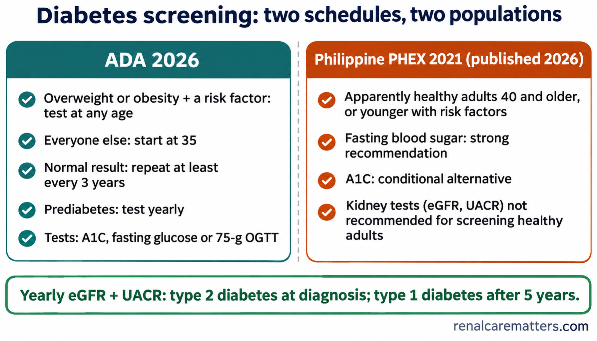
ADA and Philippine PHEX screening advice cover different populations and should not be blended; yearly eGFR and UACR apply once diabetes is diagnosed.
- ADA
- American Diabetes Association
- PHEX
- Philippine periodic health examination guidelines
- OGTT
- Oral glucose tolerance test
- eGFR
- Estimated glomerular filtration rate
- UACR
- Urine albumin-to-creatinine ratio
Do not blend the two schedules. Local laboratory slips usually label the fasting test "FBS"; confirm specimen type and the fast before interpreting it. The dedicated Philippine diabetes practice guideline uses risk-based screening and gives plasma glucose priority when FPG and A1C disagree substantially; verify the current official edition before applying a local confirmation interval that differs from ADA.
A1C, SMBG and CGM targets, read in the right order
| Measurement | Integrates | Best use | Main failure mode |
|---|---|---|---|
| A1C | ~2–3 months, recent-weighted | Trend, outcome-linked target | Red-cell age, hemoglobin variants; blind to variability and hypoglycemia |
| SMBG | A moment | Symptom checks, dosing, sensor verification | Sampling bias; hematocrit and device effects |
| CGM / AGP | Each sensor wear, every 5–15 min | TIR, TBR, TAR, variability, timing | Insufficient wear, compression lows, interstitial lag |
| eAG | Modeled from A1C | Translating A1C into mg/dL | Inherits all A1C error; wide individual prediction interval |
| GMI | Modeled from CGM mean | Comparing sensor data with A1C | Different window from A1C; depends on data sufficiency |
ADA 2026 recommendation 6.3a sets an A1C goal of <7% for many nonpregnant adults without significant hypoglycemia; 6.3b sets TIR (70–180 mg/dL, 3.9–10.0 mmol/L) >70% for many nonpregnant adult CGM users; and 6.3c sets time <70 mg/dL at <4%, or <1% for older or high-risk adults, with time <54 mg/dL <1%, and advises deintensifying therapy when these goals are not met. The time-above-range companions from the International Consensus on Time in Range are <25% above 180 mg/dL and <5% above 250 mg/dL, with a coefficient of variation (CV) of ≤36%. For older or high-risk adults the consensus relaxes TIR to >50%. Time below 54 mg/dL is nested inside time below 70 mg/dL, and the 180 and 250 bands nest the same way; never add nested bands.
Read the ambulatory glucose profile (AGP) in a fixed order: wear duration and sensor-active percentage (14 days with ≥70% active is the standard; 10–14 days is acceptable per ADA), then time below range (TBR), then TIR and time above range (TAR), then the daily profile for timing. One percent of 24 hours is 14.4 minutes, so 4% ≈ 58 minutes and 70% = 16 h 48 min per day, interpreted as a 24-hour equivalent of the captured data rather than of every hour. A1C is checked at least twice yearly when stable and at goal, and about quarterly after therapy changes or when goals are unmet.
The two conversion equations
Estimated average glucose (eAG) from the A1C-Derived Average Glucose study: eAG (mg/dL) = 28.7 × A1C − 46.7, derived in 507 people without advanced CKD, with substantial individual scatter around the regression line. Glucose management indicator (GMI) from CGM mean glucose: GMI (%) = 3.31 + 0.02392 × mean glucose (mg/dL); a mean of 180 mg/dL gives 7.6156%, displayed as 7.6%. For mmol/L, convert by multiplying by 18.0182 first. GMI was named precisely to stop clinicians treating it as an "estimated A1C": the two are expected to differ, and in the derivation data roughly a quarter of people had a gap of 1 percentage point or more.
When A1C and GMI disagree: investigate, do not adjudicate
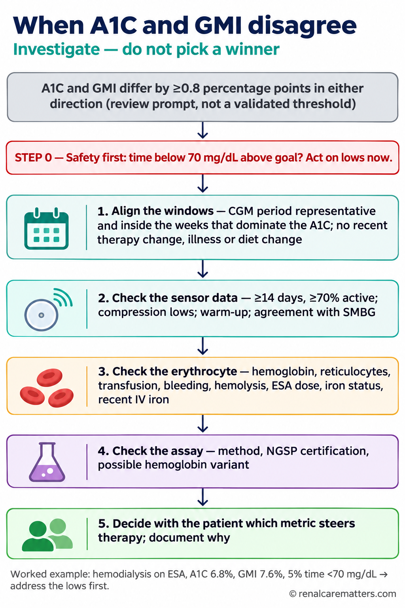
A1C–GMI discordance is a reason to investigate, starting with hypoglycemia, then timing, sensor data, erythrocyte factors and the assay.
- A1C
- Glycated hemoglobin
- GMI
- Glucose management indicator
- SMBG
- Self-monitored blood glucose
- ESA
- Erythropoiesis-stimulating agent
- NGSP
- National Glycohemoglobin Standardization Program
Worked example (dialysis). An adult on hemodialysis receiving an ESA has a laboratory A1C of 6.8% and a representative 14-day report showing GMI 7.6% and 5% time below 70 mg/dL. The A1C is 0.8 percentage points below GMI. The first priority is the 5% TBR: review when the lows occur relative to dialysis, meals and insulin with the dialysis and diabetes teams. Only then review the testing windows and red-cell factors. The gap alone cannot establish which number better represents that person's usual glucose. A clinician-facing prompt at a gap of ≥0.8 percentage points is a reasonable trigger for this review, but it is a workflow convention, not a validated diagnostic threshold.
What the dialysis glycemia studies actually show
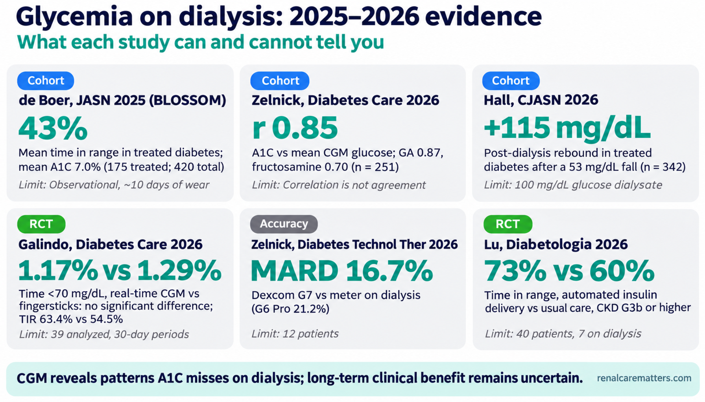
The 2025–2026 dialysis glycemia evidence at a glance, with the main limitation of each study.
- RCT
- Randomized controlled trial
- TIR
- Time in range
- GA
- Glycated albumin
- MARD
- Mean absolute relative difference
- CGM
- Continuous glucose monitoring
- BLOSSOM
- Blood Sugar Sensing On Maintenance Dialysis
| Study | Design and population | Key result | How to use it |
|---|---|---|---|
| de Boer et al., JASN 2025 (BLOSSOM) | Prospective cohort, 420 adults on maintenance dialysis (55 on peritoneal dialysis), Dexcom G6 Pro ~10 days | Treated diabetes: mean glucose 214 mg/dL, mean TIR 43%, only 22% reached TIR ≥70%, while mean A1C was 7.0%. Untreated diabetes: A1C 5.7% with mean TIR 71%. Sustained hypoglycemia was most frequent in people without diabetes. | An apparently controlled A1C in dialysis can coexist with prolonged hyperglycemia. Observational, single region, short wear. |
| Zelnick et al., Diabetes Care 2026 | Same cohort, 251 participants with valid CGM (median 9.3 days) | Correlation with mean CGM glucose: A1C r = 0.85, GA r = 0.87, fructosamine r = 0.70. A1C biased by ESA dose, body mass index, hemoglobin and albumin; GA and fructosamine biased by modality, dialysis vintage and residual function. | Correlation is association, not agreement: neither alternative marker can settle an individual A1C mismatch. |
| Hall et al., CJASN 2026 | Same cohort, 342 on hemodialysis, 1,001 sessions, 100 mg/dL glucose dialysate | Treated diabetes: pre-dialysis 212 mg/dL, fall of 53 mg/dL during treatment, rebound of 115 mg/dL to a mean peak of 265 mg/dL about 172 minutes after. Hypoglycemia event rates were higher in the post-dialysis period than on non-dialysis days. | Sample glucose before, during and for several hours after dialysis. Device- and dialysate-specific. |
| Galindo et al., Diabetes Care 2026 | Randomized crossover, insulin-treated type 2 diabetes on hemodialysis; 52 enrolled, 39 analyzed; 30-day periods, real-time CGM vs capillary testing | Primary endpoint TBR <70 mg/dL: 1.17% vs 1.29% (P = .28). TIR 63.4% vs 54.5%; time >250 mg/dL 12.3% vs 18.8%. | Null on hypoglycemia (low baseline TBR); a secondary improvement in hyperglycemia. Short, small, high attrition; no hard outcomes; not generalizable to peritoneal dialysis. |
| Zelnick et al., Diabetes Technol Ther 2026 | 12 dialysis patients wearing G6 Pro and G7 together with SMBG | Mean absolute relative difference (MARD) vs SMBG 21.2% (G6 Pro) and 16.7% (G7); 96.7% and 98.0% of values clinically acceptable; longer lag than in non-dialysis users. | Use CGM for patterns and confirm treatment-changing values with a meter. |
| Lu et al., Diabetologia 2026 | Randomized crossover, 40 adults with insulin-treated diabetes and CKD G3b or worse (7 on dialysis), automated insulin delivery (AID) vs usual care with CGM, 8 weeks each | TIR 73% vs 60%, hypoglycemia unchanged, no device-related serious adverse events. | Feasibility signal for advanced CKD; small, short, mostly non-dialysis. |
A 2025 scoping review of 64 studies in people on dialysis found reported CGM MARD values from 8.1% to 29%, with more than 97% of readings in Clarke error grid zones A or B, and A1C underestimating glucose on average. The direction across these data is consistent: CGM reveals clinically relevant patterns that A1C misses in dialysis, with more measurement error than in the general population and little outcome evidence yet. That supports the verbs "detects" and "improves TIR in short trials," not "reduces hospitalization or mortality."
KDIGO, ADA and the dialysis gap
The published KDIGO 2022 diabetes-in-CKD guideline recommends A1C to monitor glycemia in diabetes with CKD and an individualized A1C target ranging from <6.5% to <8.0% in people not treated with dialysis (recommendation 2.2.1, graded 1C). That range is a menu for choosing a target, not a band to aim inside; lower targets suit younger people with few comorbidities and low hypoglycemia risk, higher targets suit the opposite. Its practice points note that A1C accuracy and precision decline in advanced CKD, and that CGM-derived GMI can help when A1C is discordant with measured glucose or clinical symptoms. KDIGO issued no default A1C target for dialysis. The KDIGO 2026 diabetes and CKD update, a focused revision covering definitions, glycemic monitoring and treatment, went through public review that closed on April 13, 2026; until the final text is published, cite the 2022 edition for graded recommendations. The 2025 Asian Pacific Society of Nephrology (APSN) diabetic kidney disease guideline is the regional reference.
For dialysis patients, the defensible goal is safety: minimize TBR, especially after sessions, and avoid sustained marked hyperglycemia, using a plan set with the dialysis team. ADA Section 13 relaxes goals for older adults with complex health or limited life expectancy; apply the same reasoning to frailty on dialysis rather than borrowing an outpatient <7% target.
eGFR and UACR: sampling, units and confirmation
ADA recommendation 11.1a: assess UACR and eGFR at least annually in type 1 diabetes of ≥5 years' duration and in all type 2 diabetes from diagnosis; 11.1b: with established CKD, monitor 1–4 times per year by stage. ADA categories are <30, 30–299 and ≥300 mg/g. KDIGO 2024 tabulates approximate SI equivalents of <3, 3–30 and >30 mg/mmol; because the boundaries are rounded, converting a value and reclassifying can move a borderline result across categories. Keep one convention per table or tool, and display the laboratory's own units.
Biological variability in urinary albumin exceeds 20% between specimens, so the ADA asks for two of three specimens over 3–6 months before assigning persistent albuminuria, and KDIGO 2024 favors confirming an elevated random sample with a first-morning void. Transient elevation follows vigorous exercise within 24 hours, infection, fever, heart failure, marked hyperglycemia, menstruation and marked hypertension. CKD requires abnormalities persisting more than three months; an acute change calls for earlier assessment, not a CKD label. A UACR of 64 mg/g with eGFR 88 mL/min/1.73 m² is category G2–A2 if confirmed and is the phenotype in which renin–angiotensin system blockade and sodium-glucose cotransporter 2 (SGLT2) inhibition have the clearest kidney benefit. Atypical features (abrupt onset, active sediment, rapidly rising albuminuria or rapid eGFR loss, absent retinopathy in long-standing type 1 diabetes) should prompt evaluation for non-diabetic kidney disease.
Hypoglycemia levels and hyperglycemic crises
Level 1 hypoglycemia is glucose <70 and ≥54 mg/dL; level 2 is <54 mg/dL; level 3 is a severe event requiring assistance, regardless of the number. The 2024 multi-society consensus on hyperglycemic crises defines diabetic ketoacidosis (DKA) as glucose ≥200 mg/dL or known diabetes, β-hydroxybutyrate ≥3.0 mmol/L (or urine ketones 2+ or more), and pH <7.3 or bicarbonate <18 mmol/L. Dropping the glucose requirement for people with known diabetes captures euglycemic DKA, which is overrepresented with SGLT2 inhibitors. In a patient taking an SGLT2 inhibitor who is vomiting or acutely unwell, measure ketones and acid–base status whatever the glucose. Hyperosmolar hyperglycemic state (HHS) is defined by glucose ≥600 mg/dL with effective osmolality >300 mOsm/kg (or total >320) and minimal ketosis or acidosis.
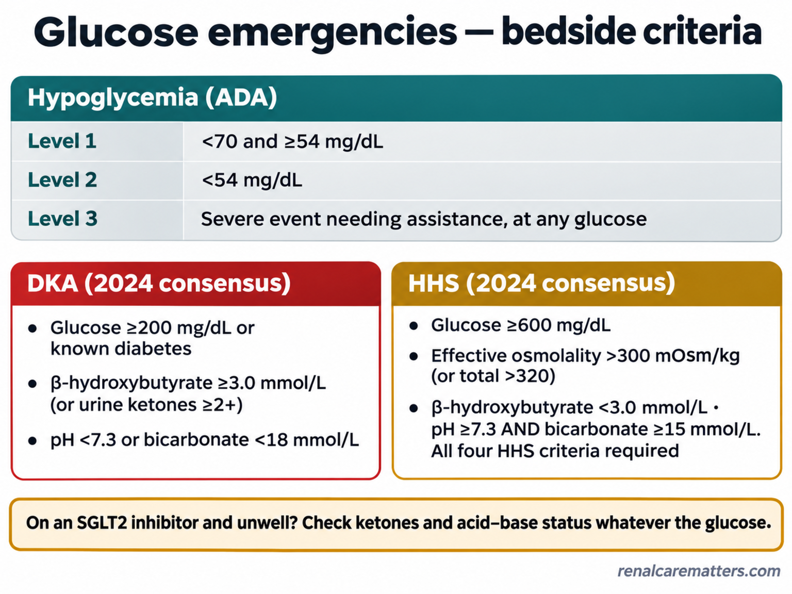
ADA hypoglycemia levels and 2024 multi-society definitions of DKA and HHS. Known diabetes satisfies the DKA glucose criterion, capturing euglycemic ketoacidosis on SGLT2 inhibitors.
- DKA
- Diabetic ketoacidosis
- HHS
- Hyperosmolar hyperglycemic state
- SGLT2
- Sodium-glucose cotransporter 2
- ADA
- American Diabetes Association
In CKD, reduced renal gluconeogenesis, prolonged insulin and sulfonylurea clearance and anorexia raise hypoglycemia risk; post-dialysis lows and delayed meals compound it. Teach a written hypoglycemia plan with 15–20 g of glucose and a 15-minute recheck for an alert patient, prefer glucose tablets or a non-diet soft drink over fruit juice in people with potassium restrictions, and prescribe glucagon where available.
Points that change practice
- A single diabetes-range result without symptoms is a reason to repeat, not to label.
- A normal A1C in a dialysis patient on an ESA is not reassurance; look at the pattern.
- Read every CGM report in the same order: coverage, lows, range, highs, timing.
- Never compare a GMI and an A1C from different months, or add nested CGM bands.
- Glycated albumin correlates with mean glucose about as well as A1C on dialysis, and is biased by different things; it is a second opinion, not an arbiter.
- Order eGFR and UACR together; neither can stand in for the other, and a single high UACR needs confirming.
- Ketones before reassurance in any unwell patient on an SGLT2 inhibitor.